Parts 1 and 2 are here: czech.html, czech2.html.
Uncle John Returns posted the tables below on Twitter and wrote: "Turns out that those Czechs who received a dose of Moderna in 2021 were twice as likely to have a pre-existing chronic condition as those who had Pfizer with AZ higher still. [...] The source is a ministry of health file which has 1 row per dose (so 3.68 GB) with other data such as the age band, sex and place of residence. Available on the vaccinations tab here https://onemocneni-aktualne.mzcr.cz/api/v2/covid-19." [https://x.com/UncleJo46902375/status/1814375808062112215]
The value of the indikace_chronicke_onemocneni column (indication chronic illness) is always either 1 or empty. I thought that the percentage of people where the value of the "indication chronic illness" column was 1 was surprisingly low, because there's only one age group where the column is true for over 10% of people with a first dose, and the percentage seemed to be fairly high in young age groups relative to old age groups (and for some reason it's about 10 times higher in ages 65-69 than ages 80+):
> download.file("https://onemocneni-aktualne.mzcr.cz/api/v2/covid-19/ockovani-profese.csv","ockovani-profese.csv") # about 4 GiB
> pro=fread("ockovani-profese.csv")
> d=pro[poradi_davky==1&vekova_skupina!="nezařazeno",.(.N,chronic=sum(indikace_chronicke_onemocneni,na.rm=T)),.(type=vakcina,age=as.numeric(sub("[+-].*","",vekova_skupina)))]
> d[,.(chronicpct=round(sum(chronic)/sum(N)*100,1)),age][order(age)]|>print(r=F)
age chronicpct
0 1.5
5 0.0
12 0.1
16 0.6
18 1.3
25 1.7
30 1.9
35 2.4
40 3.0
45 3.9
50 5.1
55 6.6
60 8.6
65 11.1
70 5.3
75 2.1
80 1.1
Clare Craig said that the column didn't mean if the person had a chronic illness or not but that it referred to "individuals preferentially vaccinated due to chronic disease", even though she didn't cite any source for why that would be the case. [https://drclarecraig.substack.com/p/double-checking-the-claims-about] That might explain why the total percentage of people who have the indication of a chronic illness is so low.
On this page for Czech vaccination statistics, there's 285,232 vaccinated people who have the "indication" of chronic illness (which is identical to the number of rows in the ockovani-profese.csv file where the indikace_chronicke_onemocneni column is true and the dose number is 1): https://ockovani.opendatalab.cz/statistiky_ockovani#ockovani-indikace. But there are also 273,374 vaccinated people who are in the "priority group" for a chronic illness. I don't know how the priority group is different from the indication group. A tooltip for the indication of chronic illness included the following text in Czech: "Chronically ill (hemato-oncological disease, oncological disease (solid tumors), serious acute or long-term heart disease, serious long-term lung disease, diabetes mellitus, obesity, serious long-term kidney disease, serious long-term liver disease, status after transplantation or on the waiting list, hypertension, seriousltip neurological or neuromuscular disease, congenital or acquired cognitive deficit, rare genetic disease, severe weakening of the immune system, other serious diseases)." But the tooltip for the priority group of chronic illness simply said "A person with a chronic illness".
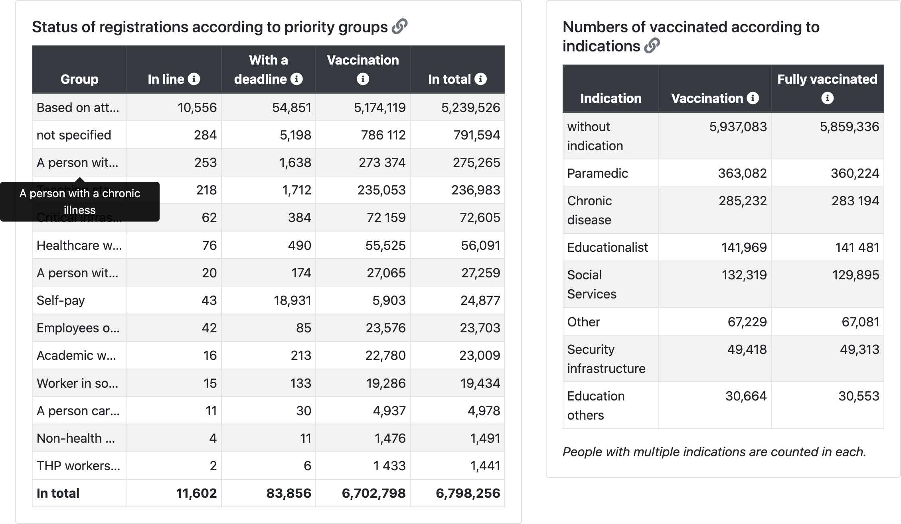
One explanation for why there's so few people who have the indication of chronic illness might be if they only include serious chronic illnesses. But it wouldn't explain why the percentage of people with an indication for chronic illness is much lower in ages 80+ than in ages 65-69. And the list of chronic illnesses in the tooltip also included hypertension, which alone should have a prevalence of more than the total percentage of people with the "indication" of chronic illness.
I found this PDF file which describes the "infectious disease information system" that is used in the Czech Republic ("Informační systém infekční nemoci", ISIN): https://vladci.cz/archive/covid/106/UZIS_2022-02_Struktura_NZIS_106.pdf. The PDF includes a list of fields which are contained in a database for COVID-19 cases, which also includes a module for COVID vaccinations. Here's a translation of the complete list of the so-called indications that were included in the vaccination module:
Indications (may change with regard to indications in the Central Reservation System - CRS):
- Professional
- Health workers of the ARO Department, ICU
- Health workers Emergency reception
- Ambulance
- Medical staff of the Infectious Diseases Department
- Medical staff of the Pulmonary Department
- Employees of public health authorities conducting epidemiological investigations
- Laboratory workers processing biological samples for examination on Covid-19
- Workers and clients in social services
- General practitioners, general practitioners for children and adolescents, dentists, pharmacists
- Workers of critical infrastructure - integrated rescue system, energy workers, government, crisis teams
- Other workers of public health protection authorities
- Other healthcare workers
- Employees of the Ministry of Defense
- Teaching staff
- Other workers in education
- Security forces
- Persons involved in the provision of health services
- THP workers in hospitals
- Caregivers (a person caring for a person in the III or IV degree dependencies)
- University academic staff
- Riskiness
- Hemato-oncological disease
- Oncological disease (solid tumors)
- Severe acute or long-term heart disease
- Serious long-term lung disease
- Diabetes mellitus
- Obesity
- Other serious illness
- Severe long-term kidney disease
- Severe long-term liver disease
- Status after transplant or on the waiting list
- Hypertension
- Severe neurological or neuromuscular disease
- Congenital or acquired cognitive deficit
- A rare genetic disease
- Severe weakening of the immune system
- Age
- People aged 80+
- People aged 70-79
- People aged 65-69
- People aged 60-64
- People aged 55-59
- People aged 50-54
- People aged 45-49
- People aged 40-44
- People aged 35-39
- People aged 30-34
- People aged 25-29
- People aged 20-24
- People aged 16-19
- People aged 12-15
- Other
In the file ockovani-registrace.csv which contains one row for each vaccinated person, there's a column called povolani (profession) which has the following values:
| Count | Translation | Czech |
|---|---|---|
| 6037598 | Based on age | Na základě dosaženého věku |
| 912596 | not specified | neuvedeno |
| 305888 | A person with a chronic illness | Osoba s chronickým onemocněním |
| 275259 | Teaching staff/non-teaching staff | Pedagogický pracovník/nepedagogický zaměstnanec |
| 79837 | Critical infrastructure | Kritická infrastruktura |
| 70863 | Healthcare worker according to §76 and §77 of Act 372/2011 Coll. | Zdravotnický pracovník dle §76 a §77 zákona 372/2011 Sb. |
| 39777 | Self-paying | Samoplátce |
| 30231 | A person with a chronic disease - in the care of a specialized center | Osoba s chronickým onemocněním - v péči specializovaného centra |
| 26026 | Employees of the Ministry of Defense | Zaměstnanci Ministerstva obrany |
| 25530 | University academic worker | Akademický pracovník VŠ |
| 21521 | Worker in social services | Pracovník v sociálních službách |
| 5486 | A person caring for a person in 3rd or 4th degree of dependence | Osoba pečující o osobu v III. nebo IV. stupni závislosti |
| 1813 |
Non-health care workers involved in the provision of health care and care for COVID-19 positive persons |
Nezdravotničtí pracovníci podílející se na poskytování zdravotní péče a péče o covid-19 pozitivní osoby |
| 1602 | THP workers in hospitals | THP pracovníci v nemocnicích |
The values of the column might indicate the criteria based on which a person qualified to be vaccinated. By far the most common value of the column was by age. So if for example a person who was chronically ill qualified to be vaccinated because of their age, maybe only the qualification for age but not chronic illness was listed in the column, since each person has only one value listed in the column. So if a similar system was used in the ockoni-profese.csv file, it might explain why there's such a low percentage of people who are indicated to have a chronic illness in the oldest age groups.
In the table above the number of people with a chronic illness is 305,888 along with 30,231 people with a chronic illness who were in the care of a specialized center, so it's a bit higher than the file ockoni-profese.csv where there's rows for 285,232 first doses where the indikace_chronicke_onemocneni column is true (even though maybe there would be more unique people where the column would be true for at least one dose, but it's not possible to tell because the file doesn't have a way to identify which doses belong to the same person).
But anyway, in the following code I calculated an age-normalized proportion of people whose "indication chronic illness" column was true, so that my baseline was the proportion of the column by age group among all people who are included in the CSV file. The excess proportion of the column was about -26% for the first dose type Comirnaty but about 55% for SPIKEVAX:
> a=d[,.(N=sum(N),chronic=sum(chronic)),.(age,type)]
> a=merge(a,d[,.(base=sum(chronic)/sum(N)),age])[,base:=base*N]
> a[,.(pct=round((sum(chronic)/sum(base)-1)*100),N=sum(N)),type][order(-N)]|>print(r=F)
type pct N
Comirnaty -26 5527776 # Pfizer
SPIKEVAX 55 526448 # Moderna
VAXZEVRIA 252 447428 # AstraZeneca
COVID-19 Vaccine Janssen -35 412320
Comirnaty 5-11 31 59001
Nuvaxovid -91 5424 # Novavax
Comirnaty Omicron XBB.1.5. 6 1988
Comirnaty Original/Omicron BA.4/BA.5 -33 669
Comirnaty Original/Omicron BA.1 77 294
Sinovac -72 181
Covishield -100 117
Comirnaty 6m-4 -100 111
Comirnaty Omicron XBB.1.5. 5-11 -31 102
Sinopharm -100 38
COMIRNATY OMICRON XBB.1.5 6m-4 150 29
Covovax -33 29
Spikevax bivalent Original/Omicron BA.1 -100 15
Sputnik V -100 10
Nuvaxovid XBB 1.5 -100 8
COVAXIN -100 5
SPIKEVAX BIVALENT ORIGINAL/OMICRON BA.4-5 310 5
Valneva -100 2
type pct N
The next plot shows the age-normalized proportion of the column by vaccine type and month of vaccination. I was expecting the late vaccinees who got the first dose in late 2021 to have a higher age-normalized proportion of the "indication chronic illness" column than people who got vaccinated during the rollout peak, but actually I got the opposite result. However it might be if the column indicates if people were first eligible to be vaccinated early because of a chronic illness.
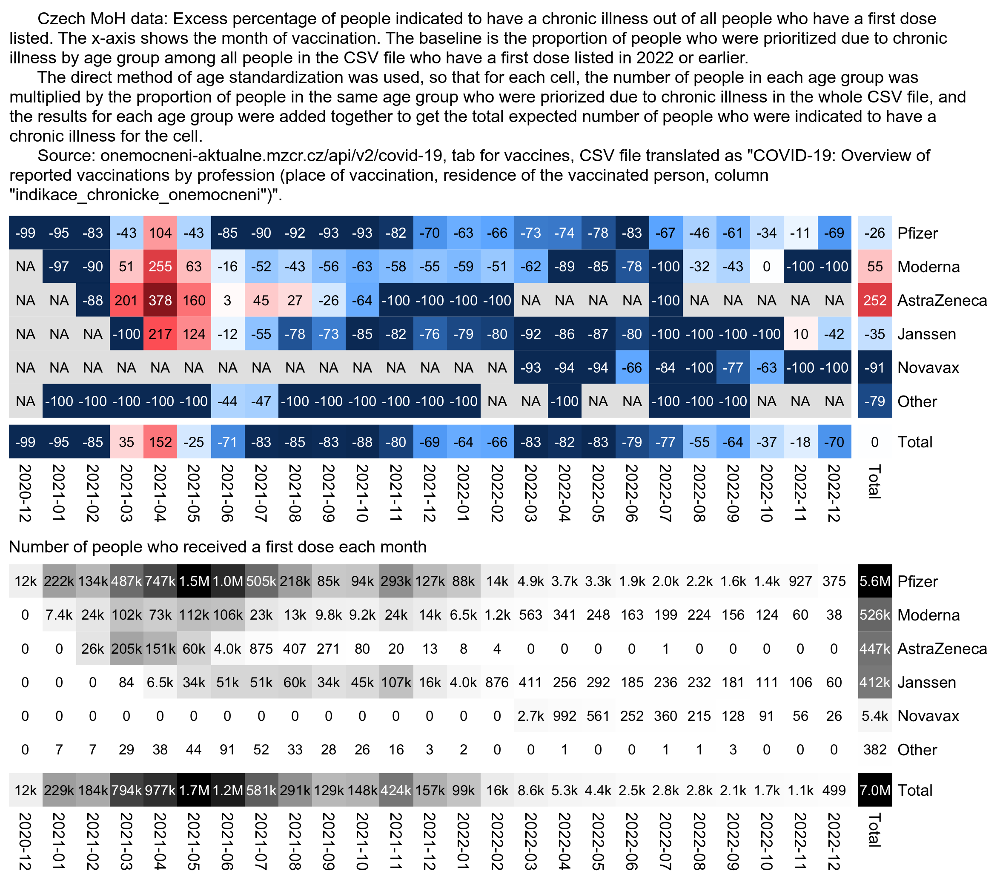
# download.file("https://onemocneni-aktualne.mzcr.cz/api/v2/covid-19/ockovani-profese.csv","ockovani-profese.csv")
library(data.table)
t=fread("ockovani-profese.csv")
yemo=\(x){u=unique(x);format(u,"%Y-%m")[match(x,u)]}
name1=unique(t$vakcina);name2=rep("Other",length(name1))
name2[name1==""]=""
name2[grep("comirnaty",ignore.case=T,name1)]="Pfizer"
name2[grep("spikevax",ignore.case=T,name1)]="Moderna"
name2[grep("nuvaxovid",ignore.case=T,name1)]="Novavax"
name2[name1=="COVID-19 Vaccine Janssen"]="Janssen"
name2[name1=="VAXZEVRIA"]="AstraZeneca"
t$type=name2[match(t$vakcina,name1)]
d=t[year(datum)<=2022&poradi_davky==1,.(.N,chronic=sum(indikace_chronicke_onemocneni,na.rm=T)),.(
month=yemo(datum),type,age=vekova_skupina)][age!="nezařazeno"]
a=d[,.(N=sum(N),chronic=sum(chronic)),.(age,type,month)]
a=merge(a,d[,.(base=sum(chronic)/sum(N)),age])[,base:=base*N]
a=a[,.(chronic=sum(chronic),N=sum(N),base=sum(base)),.(type,month)]
a[,type:=factor(type,names(sort(a[,tapply(N,type,sum)],T)))]
a=rbind(a,a[,.(chronic=sum(chronic),N=sum(N),base=sum(base),month="Total"),type])
a=rbind(a,a[,.(chronic=sum(chronic),N=sum(N),base=sum(base),type="Total"),month])
m1=a[,tapply(chronic,.(type,month),c)]
m2=a[,tapply(base,.(type,month),c)]
pop=a[,xtabs(N~type+month)]
m=(m1-m2)/ifelse(m1>m2,m2,m1)*100
disp=round((m1/m2-1)*100)
exp=.82;maxcolor=500
m[m==-Inf]=-maxcolor
pheatmap::pheatmap(abs(m)^exp*sign(m),filename="i1.png",display_numbers=disp,
gaps_row=nrow(m)-1,gaps_col=ncol(m)-1,
cluster_rows=F,cluster_cols=F,legend=F,cellwidth=19,cellheight=19,fontsize=9,fontsize_number=8,
border_color=NA,na_col="gray90",
number_color=ifelse((abs(m)^exp>.55*maxcolor^exp)&!is.na(m),"white","black"),
breaks=seq(-maxcolor^exp,maxcolor^exp,,256),
colorRampPalette(hsv(rep(c(7/12,0),5:4),c(.9,.75,.6,.3,0,.3,.6,.75,.9),c(.4,.65,1,1,1,1,1,.65,.4)))(256))
kimi=\(x){e=floor(log10(ifelse(x==0,1,abs(x))));e2=pmax(e,0)%/%3+1;p=!is.na(x)
x[p]=paste0(sprintf(paste0("%.",ifelse(e[p]%%3==0,1,0),"f"),x[p]/1e3^(e2[p]-1)),c("","k","M","B","T")[e2[p]]);x}
exp2=.6;maxcolor2=max(pop[-nrow(pop),-ncol(pop)])
pheatmap::pheatmap(pop^exp2,filename="i2.png",display_numbers=ifelse(pop<=10,round(pop),kimi(pop)),
gaps_row=nrow(m)-1,gaps_col=ncol(m)-1,
cluster_rows=F,cluster_cols=F,legend=F,cellwidth=19,cellheight=19,fontsize=9,fontsize_number=8,
border_color=NA,na_col="white",
number_color=ifelse(pop^exp2>maxcolor2^exp2*.45,"white","black"),
breaks=seq(0,maxcolor2^exp2,,256),
sapply(seq(1,0,,256),\(i)rgb(i,i,i)))
cap="\u00a0 Czech MoH data: Excess percentage of people indicated to have a chronic illness out of all people who have a first dose listed. The x-axis shows the month of vaccination. The baseline is the proportion of people who were prioritized due to chronic illness by age group among all people in the CSV file who have a first dose listed in 2022 or earlier.
For each cell, the number of people in each age group was multiplied by the proportion of people in the same age group who were priorized due to chronic illness in the whole CSV file, and the results for each age group were added together to get the total expected number of people who were indicated to have a chronic illness for the cell.
Source: onemocneni-aktualne.mzcr.cz/api/v2/covid-19, tab for vaccines, CSV file translated as \"COVID-19: Overview of reported vaccinations by profession (place of vaccination, residence of the vaccinated person, column \"indikace_chronicke_onemocneni\")\"."
system(paste0("w=`identify -format %w i1.png`;pad=20;magick -pointsize 40 -font Arial \\( -size $[w-pad*3]x caption:'",cap,"' -splice $[pad]x20 \\) \\( i1.png -crop -0+8 \\) \\( -size $[w-pad*3]x caption:'Number of people who received a first dose each month' -splice $[pad]x0 \\) \\( i2.png -crop -0+8 \\) -append 1.png"))
This shows the percentage of people by age group and vaccine type whose "indication chronic illness" column was true (where I again included only first doses):
> t=fread("ockovani-profese.csv")
> name1=unique(t$vakcina);name2=rep("Other",length(name1))
> name2[name1==""]=""
> name2[grep("comirnaty",ignore.case=T,name1)]="Pfizer"
> name2[grep("spikevax",ignore.case=T,name1)]="Moderna"
> name2[grep("nuvaxovid",ignore.case=T,name1)]="Novavax"
> name2[name1=="COVID-19 Vaccine Janssen"]="Janssen"
> name2[name1=="VAXZEVRIA"]="AstraZeneca"
> t$type=name2[match(t$vakcina,name1)]
> a=t[poradi_davky==1&vekova_skupina!="nezařazeno",.(.N,chronic=sum(indikace_chronicke_onemocneni,na.rm=T)),.(type,age=as.integer(sub("[-+].*","",vekova_skupina)))]
> a[,age:=factor(age,unique(age)[order(as.numeric(sub("[-+].*","",unique(age))))])]
> a[,type:=factor(type,a[,sum(N),type][order(-V1)]$type)]
> a=rbind(a,a[,.(N=sum(N),chronic=sum(chronic),age="Total"),type])
> a=rbind(a,a[,.(N=sum(N),chronic=sum(chronic),type="Total"),age])
> a[,tapply(round(chronic/N*100),.(type,age),c)]
0 5 12 16 18 25 30 35 40 45 50 55 60 65 70 75 80 Total
Pfizer 1 0 0 1 1 1 2 2 2 3 4 5 6 7 3 1 1 3
Moderna NA NA 0 1 3 4 4 5 5 7 8 10 12 16 7 3 2 7
AstraZeneca NA NA NA 14 17 16 19 20 21 25 28 31 34 39 12 4 3 17
Janssen NA NA 0 0 1 1 1 1 2 3 3 4 5 5 5 5 4 3
Novavax NA NA 0 0 0 0 0 0 0 0 1 0 1 2 0 1 2 0
Other NA 0 NA 0 0 0 0 0 0 3 0 8 0 4 0 0 0 1
Total 1 0 0 1 1 2 2 2 3 4 5 7 9 11 5 2 1 4
This shows third doses instead of first doses:
0 5 12 16 18 25 30 35 40 45 50 55 60 65 70 75 80 Total Pfizer 0 0 0 1 2 2 3 3 4 5 6 7 9 11 5 2 1 5 Moderna NA NA 0 2 3 4 4 5 5 7 8 10 13 17 8 3 2 7 AstraZeneca NA NA NA NA 0 0 0 12 9 9 16 33 28 30 3 6 5 12 Janssen NA NA NA NA 2 4 4 4 5 5 6 9 7 9 4 3 3 5 Novavax NA NA 0 100 7 0 0 3 0 0 6 0 0 6 5 0 12 3 Other NA NA NA NA NA 0 0 0 0 0 0 0 0 0 0 0 NA 0 Total 0 0 0 1 2 3 3 3 4 5 6 8 9 12 6 2 1 5
In both of the tables above Novavax got a lower percentage than Pfizer, which might partially explain people with a Novavax vaccine have such low mortality.
When I looked at third doses instead of first doses and I aggregated Omicron and pediatric vaccine types together with the main vaccine type, my excess age-normalized proportion of the "indication chronic illness" column was about -6% for Pfizer but 38% for Moderna:
> a=t[,.(N=sum(N),chronic=sum(chronic)),.(age,type)]
> a=merge(a,d[,.(base=sum(chronic)/sum(N)),age])[,base:=base*N]
> a[,.(pct=round((sum(chronic)/sum(base)-1)*100),N=sum(N)),type][order(-N)]|>print(r=F)
type pct N
Pfizer -6 3805345
Moderna 38 569083
Janssen -5 2463
AstraZeneca 134 433
Novavax -48 318
Other -100 28
When I calculated a Moderna-Pfizer ratio for an age-normalized proportion of the chronic illness column grouped by the month of the first dose, the ratio remained at a fairly steady level of about 5 to 6 for people who were vaccinated in May to October 2021, but the ratio suddenly dropped to about 2.3 the next month and it remained around 1 to 1.5 for the next 4 months. So that might also partially explain why the Moderna-Pfizer mortality ratio dropped to around 1.0 in people who were vaccinated in the fourth quarter of 2021 (even though the drop in the mortality ratio was already in October and not November):
> a=d[,.(N=sum(N),chronic=sum(chronic)),.(age,type,month)]
> a=merge(a,d[,.(base=sum(chronic)/sum(N)),age])[,base:=base*N]
> a=a[,.(rat=sum(chronic)/sum(base)),.(type,month)]
> m=a[,tapply(rat,.(type,month),c)]
> round(m["Moderna",]/m["Pfizer",],2)
2020-12 2021-01 2021-02 2021-03 2021-04 2021-05 2021-06 2021-07 2021-08 2021-09
NA 0.62 0.61 2.65 1.74 2.87 5.68 5.03 6.86 5.84
2021-10 2021-11 2021-12 2022-01 2022-02 2022-03 2022-04 2022-05 2022-06 2022-07
5.44 2.32 1.51 1.12 1.45 1.40 0.43 0.67 1.35 0.00
2022-08 2022-09 2022-10 2022-11 2022-12 2023-01 2023-02 2023-03 2023-04 2023-05
1.26 1.47 1.51 0.00 0.00 3.74 0.00 0.00 0.00 NaN
2023-06 2023-07 2023-08 2023-09 2023-10 2023-11 2023-12 2024-01 2024-02 2024-03
NA NA NA 0.00 0.00 0.00 0.00 0.00 NA NA
2024-04 2024-05 2024-06 2024-07
NA NA NaN NA
This shows the age-normalized chronic illness ratio compared to the age-normalized mortality ratio:
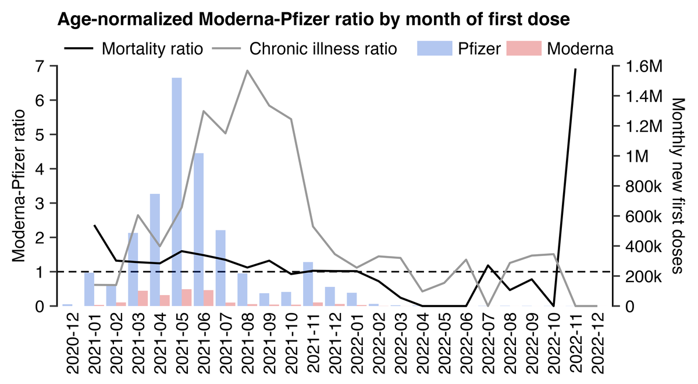
download.file("https://onemocneni-aktualne.mzcr.cz/api/v2/covid-19/ockovani-profese.csv","ockovani-profese.csv")
download.file("http://sars2.net/f/czbucketskeep.csv.gz","czbucketskeep.csv.gz")
library(data.table);library(ggplot2)
yemo=\(x){u=unique(x);format(u,"%Y-%m")[match(x,u)]}
kim=\(x)ifelse(x>=1e3,ifelse(x>=1e6,paste0(x/1e6,"M"),paste0(x/1e3,"k")),x)
t=fread("ockovani-profese.csv")
d=t[poradi_davky==1,.(.N,chronic=sum(indikace_chronicke_onemocneni,na.rm=T)),.(type=vakcina,age=vekova_skupina,month=yemo(datum))][age!="nezařazeno"]
name1=unique(d$type);name2=ifelse(name1=="","","Other")
name2[grep("comirnaty",ignore.case=T,name1)]="Pfizer"
name2[grep("spikevax",ignore.case=T,name1)]="Moderna"
name2[grep("nuvaxovid",ignore.case=T,name1)]="Novavax"
name2[name1=="COVID-19 Vaccine Janssen"]="Janssen"
name2[name1=="VAXZEVRIA"]="AstraZeneca"
d$type=name2[match(d$type,name1)]
a=d[,.(N=sum(N),chronic=sum(chronic)),.(age,type,month)]
a=merge(a,d[,.(base=sum(chronic)/sum(N)),age])[,base:=base*N]
a=a[,.(chronic=sum(chronic)/sum(base),N=sum(N)),.(type,month)]
p=dcast(a,month~type,value.var="chronic")[,.(month,chronic=Moderna/Pfizer)]
p=cbind(p,dcast(a,month~type,value.var="N")[,.(Pfizer,Moderna)])
b=fread("czbucketskeep.csv.gz")[,age:=pmax(pmin(95,age%/%5*5),15)]
me=merge(b[dose==1],b[dose<=1,.(base=sum(dead)/sum(alive)),age])[,base:=base*alive]
me=me[,.(rate=sum(dead)/sum(base)),.(month=vaxmonth,type)]
p=merge(p,dcast(me,month~type,value.var="rate")[,.(month,mort=Moderna/Pfizer)])
p1=data.frame(month=p$month,y=c(p$mort,p$chronic),type=rep(c("Mortality ratio","Chronic illness ratio"),each=nrow(p)))
p2=data.frame(month=p$month,y=c(p$Pfizer,p$Moderna),type=rep(c("Pfizer","Moderna"),each=nrow(p)))
p1$type=factor(p1$type,unique(p1$type))
p2$type=factor(p2$type,unique(p2$type))
cand=c(sapply(c(1,2,5),\(x)x*10^c(-10:10)))
ymax=max(p$chronic,p$mort,na.rm=T)
ystep=cand[which.min(abs(cand-ymax/6))]
yend=ystep*ceiling(ymax/ystep)
ymax2=max(p2$y,na.rm=T)
ystep2=cand[which.min(abs(cand-ymax2/6))]
yend2=ystep2*ceiling(ymax2/ystep2)
secmult=yend/yend2
pal1=c("black","gray60")
pal2=alpha(hsv(c(22,0)/36,1,.8),.5)
exp=.7;xstart=1-exp;xend=length(p$month)+exp
ggplot(p,aes(x=month))+
geom_vline(xintercept=c(xstart,xend),linewidth=.3,lineend="square")+
geom_hline(yintercept=1,linewidth=.3,linetype=2,lineend="square")+
geom_bar(data=p2,aes(y=y*secmult,fill=type),stat="identity",position="dodge",linewidth=.15)+
geom_line(data=na.omit(p1),aes(y=y,color=type,group=type),linewidth=.4)+
labs(title="Age-normalized Moderna-Pfizer ratio by month of vaccination",x=NULL,y="Moderna-Pfizer ratio")+
scale_x_discrete(expand=expansion(mult=0,add=exp))+
scale_y_continuous(limits=c(0,yend),breaks=seq(0,yend,ystep),expand=expansion(0),labels=\(x)ifelse(x>=1e3,paste0(x/1e3,"k"),x),sec.axis=sec_axis(trans=~./secmult,breaks=seq(0,yend2,ystep2),name="Monthly new doses",labels=kim))+
scale_color_manual(values=pal1)+
scale_fill_manual(values=pal2)+
coord_cartesian(clip="off")+
theme(axis.text=element_text(size=7,color="black"),
axis.text.x=element_text(angle=90,vjust=.5,hjust=1,margin=margin(2.5)),
axis.ticks=element_line(linewidth=.3),
axis.ticks.length=unit(3,"pt"),
axis.ticks.length.x=unit(0,"pt"),
axis.title=element_text(size=7,color="black"),
axis.title.y.left=element_text(margin=margin(,3,,1)),
axis.title.y.right=element_text(margin=margin(,,,4)),
legend.direction="horizontal",
legend.background=element_rect(fill=alpha("white",0)),
legend.box.spacing=unit(0,"pt"),
legend.key.height=unit(4,"pt"),
legend.key.width=unit(15,"pt"),
legend.key=element_rect(fill=alpha("white",0)),
legend.margin=margin(0,2,4,2),
legend.position="top",
legend.spacing.x=unit(2,"pt"),
legend.text=element_text(size=7),
legend.title=element_blank(),
panel.grid.major=element_blank(),
panel.background=element_rect(fill="white"),
plot.margin=margin(4,4,4,4),
plot.title=element_text(size=7.5,margin=margin(1,0,4.5,0),face=2))
ggsave("0.png",width=4,height=2.2,dpi=300*4)
system("magick 0.png -resize 25% 1.png")
This also shows the Moderna-Pfizer ratio by age group and month of vaccination:

The second file from the bottom under vaccinations here has data for hospitalizations by vaccine type and age group: https://onemocneni-aktualne.mzcr.cz/api/v2/covid-19.
The file has about 7 million rows with one row for each vaccinated person. It has these columns:
kraj_bydliste_nazev name of region of resicence
kraj_bydliste_kod code of region of residence
orp_bydliste_nazev name of county of residence
orp_bydliste_kod code of county of residence
vekova_kategorie age category
ockovaci_latka_nazev vaccine name
ockovaci_latka_kod vaccine code
prvni_davka date of first dose
druha_davka date of second dose
dokoncene_ockovani date when completed primary course
posilujici_davka date of booster dose
indikace_pred_ockovanim type of test before vaccination
pozivita_pred_ockovanim positivity of test before vaccination
pozivita_pred_ockovanim_datum date of positive test before vaccination
hospitalizace_pred_ockovanim hospitalized before vaccination
jip_pred_ockovanim ICU before vaccination
indikace_po_ockovani type of test after vaccination
pozivita_po_ockovani positivivity of test after vaccination
pozivita_po_ockovani_datum date of positive test after vaccination
hospitalizace_po_ockovani hospitalized after vaccination
jip_po_ockovani ICU after vaccination
The types of test are diagnostic, preventative, epidemiological, or other (ostatní). Negative tests are not listed so the type of the test is only shown for positive tests. There's only up to one test before vaccination and one test after vaccination listed for each person, and similarly there's only up to one hospitalization before vaccination and one hospitalization after vaccination listed for each person.
I used the file to calculate an age-normalized hospitalization rate from the day of the first dose up to the present. The file included data for hospitalizations up the the present month, so I used the date when I downloaded the file as the end of my observation period.
In order to calculate the expected number of deaths for each vaccine type, I multiplied the number of person-days the vaccine type had for each age group with the mortality rate of each age group among all people who had a first dose listed in the file.
My excess percentage of hospitalizations was about -6% for the first dose type "Comirnaty" and about -4% for the first dose type "SPIKEVAX", so there was not much difference, but AstraZeneca and particularly Janssen vaccines had a much higher hospitalization rate:
> download.file("https://onemocneni-aktualne.mzcr.cz/api/v2/covid-19/ockovani-pozitivni-hospitalizovani.csv","ockovani-pozitivni-hospitalizovani.csv")
> h=fread("ockovani-pozitivni-hospitalizovani.csv")
> d=h[,.(age=vekova_kategorie,date=prvni_davka,type=ockovaci_latka_nazev,hosp=hospitalizace_po_ockovani)][age!="-"]
> maxdate=as.IDate("2024-7-20")
> a=d[,.(hosp=sum(hosp,na.rm=T),pop=sum(as.double(maxdate-date+1))),.(type,age)]
> a=merge(a,a[,.(base=sum(hosp)/sum(pop)),age])[,base:=base*pop]
> a[,.(excesspct=round((sum(hosp)/sum(base)-1)*100),hospitalizations=sum(hosp),pyears=round(sum(pop/365))),type][order(-pyears)]|>print(r=F)
type excesspct hospitalizations pyears
Comirnaty -6 43053 17432607 # Pfizer
SPIKEVAX -4 6234 1657122 # Moderna
VAXZEVRIA 19 11921 1478098 # AstraZeneca
COVID-19 Vaccine Janssen 57 3576 1185707
Nuvaxovid -50 7 12140 # Novavax
Comirnaty Omicron XBB.1.5. -10 7 1349
Comirnaty Original/Omicron BA.4/BA.5 -100 0 1015
Sinovac -100 0 543
Comirnaty Original/Omicron BA.1 -100 0 454
Covishield -100 0 372
Comirnaty 6m-4 -100 0 143
Sinopharm -100 0 113
Covovax -100 0 87
Comirnaty Omicron XBB.1.5. 5-11 -100 0 62
Sputnik V -100 0 30
Spikevax bivalent Original/Omicron BA.1 -100 0 22
COVAXIN -100 0 16
COMIRNATY OMICRON XBB.1.5 6m-4 -100 0 15
SPIKEVAX BIVALENT ORIGINAL/OMICRON BA.4-5 -100 0 4
Valneva -100 0 4
Nuvaxovid XBB 1.5 -100 0 2
type excesspct hospitalizations pyears
In the code below I additionally normalized the hospitalization rate for the month of vaccination. I now only included first doses given in 2021, because otherwise I would've been more likely to get anomalously high baseline mortality rates for combinations of vaccination month and age group that had a low number of person-days. However now Moderna got a slightly lower excess hospitalization percent than Pfizer which was the opposite of my previous calculation. And now there was a big drop in the excess hospitalization rate of Janssen vaccines, because late vaccinees have a higher hospitalization rate than early vaccinees, and late vaccinees are overrepresented for Janssen vaccines:
> yemo=\(x){u=unique(x);format(u,"%Y-%m")[match(x,u)]}
> d2=d[date<="2021-12-31"][,month:=yemo(date)]
> a=d2[,.(hosp=sum(hosp,na.rm=T),pop=sum(as.double(maxdate-date+1))),.(type,age,month)]
> a=merge(a,a[,.(base=sum(hosp)/sum(pop)),.(month,age)])[,base:=base*pop]
> a=a[,.(excesspct=round((sum(hosp)/sum(base)-1)*100),hospitalizations=sum(hosp),pyears=round(sum(pop/365))),type]
> a[order(-pyears)]|>print(r=F)
type excesspct hospitalizations pyears
Comirnaty -5 42775 17127673
SPIKEVAX -6 6210 1633228
VAXZEVRIA 21 11921 1478067
COVID-19 Vaccine Janssen 28 3562 1168387
Sinovac -100 0 539
Covishield -100 0 372
Sinopharm -100 0 109
Covovax -100 0 85
Sputnik V -100 0 28
COVAXIN -100 0 16
The next plot shows the excess hospitalization percent by age and the month of the first dose. There's a diagonal pattern across different age groups where there's a low excess hospitalization percent during the same month when the number of first doses peaked in the age group:
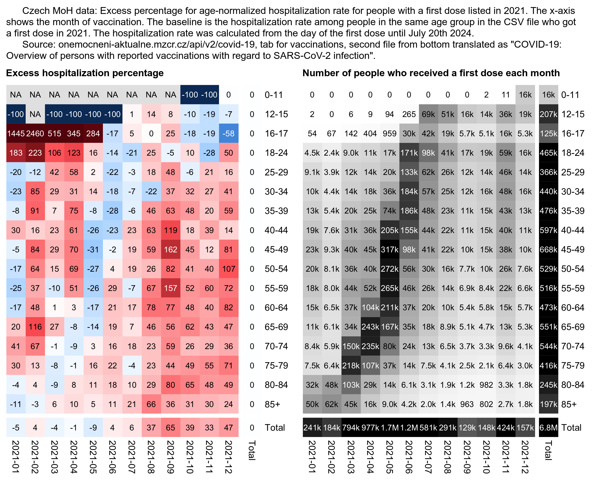
The next plot shows the excess hospitalization rate by vaccine type instead of age group. Janssen and AstraZeneca got a much higher total hospitalization rate than Pfizer and Moderna. I didn't normalize the total excess mortality by the month of vaccination so Janssen again got a high percentage of excess hospitalizations (because the late vaccinees who had a high hospitalization rate were overrepresented for Janssen vaccines):
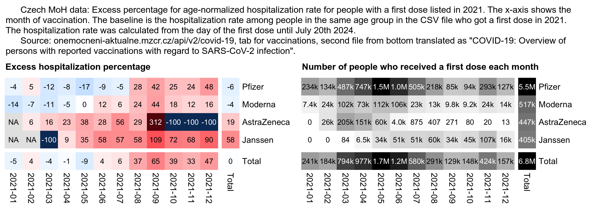
Here's code for making the heatmaps:
library(data.table)
h=fread("ockovani-pozitivni-hospitalizovani.csv")
d=h[,.(age=vekova_kategorie,date=prvni_davka,type=ockovaci_latka_nazev,hosp=hospitalizace_po_ockovani)]
d=d[age!="-"&date<"2022-01-01"]
u=unique(d$date);d$month=format(u,"%Y-%m")[match(d$date,u)]
a=d[,.(.N,hosp=sum(hosp,na.rm=T),pop=sum(as.double(as.IDate("2024-7-20")-date+1))),.(month,age)]
a=merge(a,a[,.(base=sum(hosp)/sum(pop)),age])[,base:=base*pop]
p=a[,.(N=sum(N),hosp=sum(hosp),base=sum(base),pop=sum(pop)),.(month,age)]
p=rbind(p,p[,.(N=sum(N),hosp=sum(hosp),base=sum(base),pop=sum(pop),age="Total"),month])
p=rbind(p,p[,.(N=sum(N),hosp=sum(hosp),base=sum(base),pop=sum(pop),month="Total"),age])
m=p[,tapply((hosp-base)/ifelse(hosp>base,base,hosp)*100,.(age,month),c)]
disp=p[,tapply((hosp/base-1)*100,.(age,month),round)]
pop=p[,xtabs(N~age+month)]
exp=.7;maxcolor=300;m[m==-Inf]=-maxcolor
pheatmap::pheatmap(abs(m)^exp*sign(m),filename="i1.png",display_numbers=disp,
gaps_row=nrow(m)-1,gaps_col=ncol(m)-1,
cluster_rows=F,cluster_cols=F,legend=F,cellwidth=19,cellheight=19,fontsize=9,fontsize_number=8,
border_color=NA,na_col="gray90",
number_color=ifelse((abs(m)^exp>.55*maxcolor^exp)&!is.na(m),"white","black"),
breaks=seq(-maxcolor^exp,maxcolor^exp,,256),
colorRampPalette(hsv(rep(c(7/12,0),5:4),c(.9,.75,.6,.3,0,.3,.6,.75,.9),c(.4,.65,1,1,1,1,1,.65,.4)))(256))
kimi=\(x){e=floor(log10(ifelse(x==0,1,abs(x))));e2=pmax(e,0)%/%3+1;p=!is.na(x)
x[p]=paste0(sprintf(paste0("%.",ifelse(e[p]%%3==0,1,0),"f"),x[p]/1e3^(e2[p]-1)),c("","k","M","B","T")[e2[p]]);x}
exp2=.6;maxcolor2=max(pop[-nrow(pop),-ncol(pop)])
pheatmap::pheatmap(pop^exp2,filename="i2.png",display_numbers=ifelse(pop<=10,round(pop),kimi(pop)),
gaps_row=nrow(m)-1,gaps_col=ncol(m)-1,
cluster_rows=F,cluster_cols=F,legend=F,cellwidth=19,cellheight=19,fontsize=9,fontsize_number=8,
border_color=NA,na_col="white",
number_color=ifelse(pop^exp2>maxcolor2^exp2*.45,"white","black"),
breaks=seq(0,maxcolor2^exp2,,256),
sapply(seq(1,0,,256),\(i)rgb(i,i,i)))
cap="\u00a0 Czech MoH data: Excess percentage for age-normalized hospitalization rate for people with a first dose listed in 2021. The x-axis shows the month of vaccination. The baseline is the hospitalization rate among people in the same age group in the CSV file who got a first dose in 2021. The hospitalization rate was calculated from the day of the first dose until July 20th 2024.
Source: onemocneni-aktualne.mzcr.cz/api/v2/covid-19, tab for vaccinations, second file from bottom translated as \"COVID-19: Overview of persons with reported vaccinations with regard to SARS-CoV-2 infection\"."
system(paste0("pad=24;w=`identify -format %w i1.png`;magick -pointsize 40 -font Arial \\( -size $[w*2-pad*3] caption:'",cap,"' -splice $[pad]x20 \\) -font Arial-Bold \\( \\( \\( -size $[w-pad*3] caption:'Excess hospitalization percentage' -splice $[pad]x20 \\) i1.png -append \\) \\( \\( -size $[w-pad*2] caption:'Number of people who received a first dose each month' -splice $[pad]x20 \\) i2.png -append \\) +append \\) -append 1.png"))
I have been telling Kirsch that if the reason why Moderna has higher ASMR than Pfizer would be because Moderna vaccines were killing a lot more people, you'd expect the Moderna-Pfizer ratio to be higher in the first days or weeks following vaccination and get closer to 1.0 over time, because deaths caused by vaccines would probably be much more common in the days or weeks following vaccination than more than a year after vaccination.
However this plot shows that the Moderna-Pfizer ratio remains at a consistent level of about 1.1 to 1.6 until it shoots up at the very end of the plot (when there's only a small number of people who got vaccinated early enough that they had not yet ran out of follow-up time):
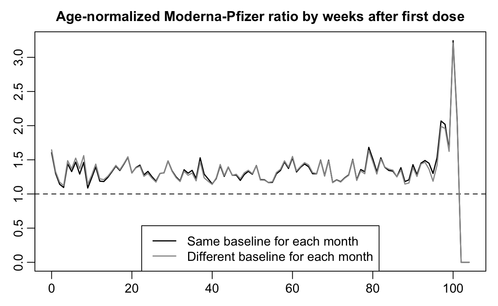
In the black line the ratio was only normalized by age. In the gray line the ratio was additionally normalized by ongoing month, but it didn't change the results that much.
But anyway, you would at least think that there would be more vaccine deaths in weeks 0 to 29 after vaccination than in weeks 60 to 89. But because the Moderna-Pfizer ratio remains consistently elevated even more than a year after vaccination, it rather seems to be the product of some kind of confounding factors.
b=data.table::fread("http://sars2.net/f/czbucketskeep.csv.gz")
b[,age:=pmax(pmin(95,age%/%5*5),15)]
d=merge(b[dose==1],b[dose<=1,.(base2=sum(dead)/sum(alive)),.(month,age)])[,base2:=base2*alive]
d=merge(d,b[dose<=1,.(base1=sum(dead)/sum(alive)),age],by="age")[,base1:=base1*alive]
d=d[,.(rate1=sum(dead)/sum(base1),rate2=sum(dead)/sum(base2)),.(week,type)]
a1=d[,xtabs(rate1~week+type)];r1=a1[,"Moderna"]/a1[,"Pfizer"]
a2=d[,xtabs(rate2~week+type)];r2=a2[,"Moderna"]/a2[,"Pfizer"]
week=unique(d$week)
png("1.png",1300,800,res=198)
par(mar=c(2.3,2.3,2.1,.8),mgp=c(0,.6,0))
tit="Age-normalized Moderna-Pfizer ratio by weeks after first dose"
leg=c("Normalized by age only","Normalized by age and ongoing month")
col=c("black","gray60")
plot(week,r1,type="l",col=col[1],main=tit,xlab=NA,ylab=NA,lwd=1.5,cex.main=1.1)
abline(h=1,lty=2)
lines(week,r2,type="l",col=col[2],lwd=1.5)
legend("bottom",legend=leg,col=col,lty=1,lwd=1.5)
dev.off()
The following code calculates an age-normalized excess hospitalization percentage relative to a baseline of unvaccinated people. The observation period starts in January 2021 and ends on July 20th 2024.
I combined two different CSV files published by the Czech Ministry of Health: https://onemocneni-aktualne.mzcr.cz/api/v2/covid-19.
I took hospitalizations by vaccine type from the same CSV file as earlier. It's missing the date of hospitalization but it only has a field which indicates if a person has been hospitalized after vaccination or not, so I had to calculate the hospitalization rate up to the present day and I wasn't able to choose which day my observation period ended.
I took hospitalizations in unvaccinated people from another CSV file published by the MoH. But I didn't find a good way to calculate the number of person-days for unvaccinated people up to the present day, so I took the number of person-days for unvaccinated people from one of my buckets files, so that I used the number of person-days in each age group in December 2022 as the subsequent population size up to July 2024 so that I adjusted the person-days for the length of each month.
system("wget onemocneni-aktualne.mzcr.cz/api/v2/covid-19/ockovani-{hospitalizace-tyden,pozitivni-hospitalizovani}.csv sars2.net/f/czbucketsdaily.csv.gz")
library(data.table)
yemo=\(x){u=unique(x);format(u,"%Y-%m")[match(x,u)]}
unvaxhosp=fread("ockovani-hospitalizace-tyden.csv")
unvax=unvaxhosp[,.(hosp=hospitalizovani_bez_ockovani),.(date=tyden_od+3,age=pmax(25,pmin(80,as.numeric(sub("[-+].*","",vekova_skupina)))))][,spline(date,hosp/7,xout=min(date):max(date)),age][,.(hosp=sum(y)),.(age,month=yemo(`class<-`(x,"Date")))]
maxdate=as.IDate("2024-7-20")
unvaxpop=fread("czbucketsdaily.csv.gz")[dose==0][,.(pop=sum(alive)),.(month=yemo(date),age=pmax(pmin(age,80),25)%/%5*5)]
unvaxpop=rbind(unvaxpop,unvaxpop[month=="2022-12",.(pop,month=seq(as.Date("2023-1-1"),as.Date("2024-7-1"),"month")),age][,pop:=pop/31*ifelse(month==as.Date("2024-7-1"),20,lubridate::days_in_month(month))][,month:=yemo(month)][])
vaxhosp=fread("ockovani-pozitivni-hospitalizovani.csv")
vax=vaxhosp[,.(age=vekova_kategorie,date=prvni_davka,type=ockovaci_latka_nazev,hosp=hospitalizace_po_ockovani)][age!="-"]
name1=unique(vax$type);name2=rep("Other",length(name1))
name2[name1==""]=""
name2[grep("comirnaty",ignore.case=T,name1)]="Pfizer"
name2[grep("spikevax",ignore.case=T,name1)]="Moderna"
name2[grep("nuvaxovid",ignore.case=T,name1)]="Novavax"
name2[name1=="COVID-19 Vaccine Janssen"]="Janssen"
name2[name1=="VAXZEVRIA"]="AstraZeneca"
vax$type=name2[match(vax$type,name1)]
a=vax[,.(hosp=sum(hosp,na.rm=T),pop=sum(as.double(as.IDate("2024-7-20")-date+1))),.(age=pmax(25,pmin(80,as.numeric(sub("[+-].*","",age)))),type)]
a=merge(a,merge(unvax,unvaxpop)[,.(hosp=sum(hosp),pop=sum(pop)),age][,.(base=hosp/pop,age)])[,base:=base*pop][]
a[,.(excess=(sum(hosp)/sum(base)-1)*100),type][order(-excess),excess:=round(excess)][]|>print(r=F)
I only considered first doses in the code above. The output shows that the excess hospitalization percent was about -79% for people whose first dose was Pfizer, -77% for Moderna, -71% for AstraZeneca, and -68% for Janssen:
type excesspct
Pfizer -79
Moderna -77
Novavax -91
AstraZeneca -71
Janssen -68
Other -100
So in other words unvaccinated people had about 5 times higher age-normalized hospitalization rate than people who got a Pfizer vaccine for the first dose, or Pfizer vaccines had about 79% efficacy in preventing hospitalization relative to the baseline of unvaccinated people.
Novavax got an excess hospitalization percent of -91% above, but it's because people only started getting Novavax vaccines in March 2022 after which there weren't that many people hospitalized for COVID. The CSV file I used to get hospitalization data by vaccine type is missing the date of hospitalization, so I wasn't able to adjust my excess mortality percent for the ongoing month.
For the rare vaccine types that I aggregated under the label "Other", there were zero hospitalizations so the excess hospitalization percent was -100%.
But anyway, my results roughly seem to match the record-level data which shows that during the COVID wave in the last two months of 2021, the spike in all-cause ASMR was higher for Janssen and AstraZeneca vaccines but more flat for Moderna and Pfizer.
One limitation of my analysis is that a large part of the person-days of vaccinated people are during periods with low hospitalizations from mid-2022 up to July 2024 and in the third quarter of 2021. But unvaccinated people have a lot of person-days in the first quarter of 2021 when there was a high number of hospitalizations but many people had not yet been vaccinated.
In June 2024 the Czech authors who uploaded the record-level data to GitHub published a paper where they analyzed batch safety data they received through a freedom of information response: https://onlinelibrary.wiley.com/doi/abs/10.1111/eci.14271. The paper is behind a paywall, but I bought access to it and posted screenshots of the paper here: i/czech-batch-study.jpg. The batch data is available from this spreadsheet: https://github.com/PalackyUniversity/batch-dependent-safety/blob/main/data/SUKL-batches-AE.xlsx.
In the spreadsheet posted at GitHub, Pfizer vaccines got a lower rate of deaths than Moderna vaccines but a higher rate of serious adverse events:
library(data.table);library(openxlsx)
f="SUKL-batches-AE.xlsx"
download.file("https://github.com/PalackyUniversity/batch-dependent-safety/raw/main/data/SUKL-batches-AE.xlsx",f)
s1=data.table(read.xlsx(f))[,.(doses=sum(doses_per_batch)),name]
s2=data.table(read.xlsx(f,sheet=2))[,.(dead=sum(deaths),serious=sum(serious)),name]
me=merge(s1,s2,all=T)
name=rep("Other",nrow(me))
name[grep("COMIRNATY",me$name)]="Pfizer"
name[grep("MODERNA|SPIKEVAX",me$name)]="Moderna"
name[grep("NUVAXOVID",me$name)]="Novavax"
name[grep("JANSSEN",me$name)]="Janssen"
name[grep("VAXZEVRIA|ASTRAZENECA",me$name)]="AstraZeneca"
me$name=name
me[is.na(me)]=0
me=me[,.(dead=sum(dead),serious=sum(serious),doses=sum(doses)),name]
me=me[,.(doses,name,dead,serious,deadpermil=dead/doses*1e6,seriouspermil=serious/doses*1e6)]
me[order(-doses)]|>dplyr::mutate_if(is.double,round,1)|>print(r=F)
name doses dead serious deadpermil seriouspermil
Pfizer 28343760 134 5183 4.7 182.9
Moderna 3798150 26 583 6.8 153.5
AstraZeneca 1113200 44 695 39.5 624.3
Janssen 776800 10 241 12.9 310.2
Novavax 632000 0 4 0.0 6.3
Other 64800 2 13 30.9 200.6
If Pfizer is used as the baseline, the number of deaths per dose was about 8 times higher for AstraZeneca and about 3 times higher for Janssen:
> x=data.frame(me,row.names=1);t((t(x)/unlist(x["Pfizer",])))[,4:5]|>round(2)
deadpermil seriouspermil
Pfizer 1.00 1.00
AstraZeneca 8.36 3.41
Janssen 2.72 1.70
Moderna 1.45 0.84
Novavax 0.00 0.03
Other 6.53 1.10
The spreadsheet for the batch data didn't contain information about age or other confounders. But in the record-level data when I assigned a random birthday for each person and I counted the person-days for each age up to the end of 2022, the average age was about 50 for people who got a Pfizer vaccine for the first dose but about 56 for Moderna and 68 for AstraZeneca:
> b=fread("http://sars2.net/f/czbucketskeep.csv.gz")
> b[dose==1,.(alive=sum(as.double(alive))),.(age,type)][,.(age=weighted.mean(age,alive)),type][order(age)]|>print(r=F)
type age
Novavax 41.5
Other 44.1
Janssen 47.3
Pfizer 49.7
Moderna 56.0
AstraZeneca 68.4
However when I took the average age for the batches from the record-level data, it got a correlation of only about 0.2 with both the rate of deaths per batch and the rate of serious adverse events per batch:
download.file("http://sars2.net/f/czbucketsbatchkeep.csv.xz","czbucketsbatchkeep.csv.xz")
b=fread("xz -dc czbucketsbatchkeep.csv.xz")
ages=b[batch!="",.(alive=sum(alive)),.(age,batch)][,.(age=weighted.mean(age,alive)),batch]
s1=data.table(read.xlsx(f))[,.(batch=sub("^\t","",batch_id),doses=doses_per_batch)]
s2=data.table(read.xlsx(f,sheet=2))[,.(dead=sum(deaths),serious=sum(serious)),batch]
me=merge(merge(s1,ages,all=T),s2,all=T)
me[is.na(me)]=0
me[doses>0,cor(dead/doses,age)]
# [1] 0.1825102 (correlation between age and the rate of deaths)
me[doses>0,cor(serious/doses,age)]
# [1] 0.1874058 (correlation between age and the rate of serious adverse events)
In the following code I calculated an age-normalized mortality rate for each batch in the record-level data. Its correlation was about -0.01 with both the rate of deaths in the spreadsheet and the rate of serious adverse events:
b=fread("xz -dc czbucketsbatchkeep.csv.xz")
d=b[,.(dead=sum(dead),alive=sum(alive)),.(batch,age=ifelse(age<15,0,pmin(age,95)))]
d=merge(d,d[,.(base=sum(dead)/sum(alive)),.(age)])[,base:=base*alive]
d=d[,.(rate=sum(dead)/sum(base)),batch]
f="SUKL-batches-AE.xlsx"
s1=data.table(read.xlsx(f))[,.(batch=sub("^\t","",batch_id),doses=doses_per_batch)]
s2=data.table(read.xlsx(f,sheet=2))[,.(dead=sum(deaths),serious=sum(serious)),batch]
merge(d,merge(s1,s2)[doses>0,.(reported=dead/doses),batch])[,cor(rate,reported)]
# [1] -0.009126758
merge(d,merge(s1,s2)[doses>0,.(reported=serious/doses),batch])[,cor(rate,reported)]
# [1] -0.01475335
From this plot you can also see that the rate of serious adverse event reports has a correlation of close to zero with the excess mortality in the record-level data:
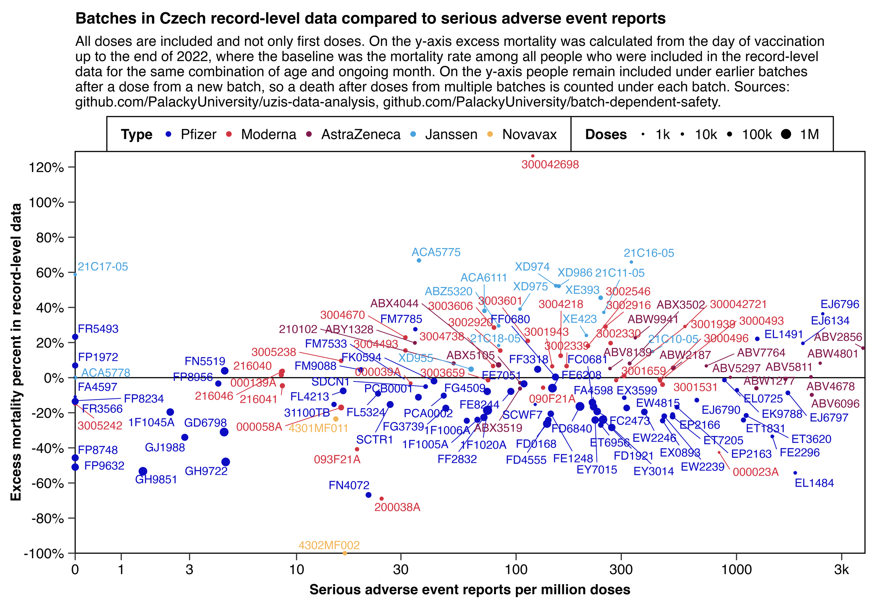
# download.file("http://sars2.net/f/czbucketsbatchkeep.csv.xz","czbucketsbatchkeep.csv.xz")
# download.file("https://github.com/PalackyUniversity/batch-dependent-safety/raw/main/data/SUKL-batches-AE.xlsx","SUKL-batches-AE.xlsx")
library(data.table);library(openxlsx);library(ggplot2);library(ggallin)
kim=\(x)ifelse(x>=1e3,ifelse(x>=1e6,paste0(x/1e6,"M"),paste0(x/1e3,"k")),x)
b=fread("xz -dc czbucketsbatchkeep.csv.xz")
d=b[,.(dead=sum(dead),alive=sum(alive)),.(batch,month,type,age=ifelse(age<15,0,pmin(age,95)))]
d=merge(d,d[,.(base=sum(dead)/sum(alive)),.(age,month)])[,base:=base*alive]
d=d[,.(y=(sum(dead)/sum(base)-1)*100),.(batch,type)]
f="SUKL-batches-AE.xlsx"
s1=data.table(read.xlsx(f))[,.(doses=head(doses_per_batch,1)),.(batch=sub("^\t","",batch_id))]
s2=data.table(read.xlsx(f,sheet=2))[,.(x=sum(serious)),batch]
p=merge(d,merge(s1,s2)[doses>0,.(x=x/doses*1e6,doses),batch])
xstart=0;xend=max(p$x);ystart=-100;yend=max(p$y)*1.02;ystep=20
xbreak=seq(xstart,xend,xstep);ybreak=seq(ystart,yend,ystep)
p$type=factor(p$type,p[,sum(as.double(doses)),type][order(-V1)]$type)
color=hsv(c(240,355,330,204,36)/360,c(.94,.75,.8,.67,.64),c(.76,.82,.5,.87,.95))
pointsize=10^(3:6)
sub="All doses are included and not only first doses. On the y-axis excess mortality was calculated from the day of vaccination up to the end of 2022, where the baseline was the mortality rate among all people who were included in the record-level data for the same combination of age and ongoing month. On the y-axis people remain included under earlier batches after a dose from a new batch, so a death after doses from multiple batches is counted under each batch. Sources: github.com/PalackyUniversity/uzis-data-analysis, github.com/PalackyUniversity/batch-dependent-safety."|>stringr::str_wrap(128)
ggplot(p,aes(x,y))+
geom_vline(xintercept=c(xstart,xend),linewidth=.3,lineend="square")+
geom_hline(yintercept=c(ystart,0,yend),linewidth=.3,lineend="square")+
geom_point(aes(color=type,size=doses),stroke=0)+
# geom_text(aes(label=batch,color=type),size=2.3,vjust=-.6,show.legend=F)+
ggrepel::geom_text_repel(aes(label=batch,color=type),size=2.3,show.legend=F,max.overlaps=Inf,segment.size=.2,min.segment.length=.2,force=10,force_pull=2,box.padding=.1)+
labs(title="Batches in Czech record-level data compared to serious adverse event reports",x="Serious adverse event reports per million doses",y="Excess mortality percent in record-level data",subtitle=sub)+
scale_x_continuous(trans=pseudolog10_trans,limits=c(xstart,xend),breaks=c(0,outer(c(1,3),10^(0:9))),labels=kim)+
scale_y_continuous(limits=c(ystart,yend),breaks=ybreak,labels=\(x)paste0(x,"%"))+
scale_color_manual(values=color,name="Type")+
scale_size_continuous(range=c(.7,2.7),limits=range(pointsize),breaks=pointsize,labels=kim,name="Doses")+
coord_cartesian(clip="off",expand=F)+
guides(color=guide_legend(order=1),size=guide_legend(order=2))+
theme(axis.text=element_text(size=8,color="black"),
axis.ticks=element_line(linewidth=.3),
axis.ticks.length=unit(4,"pt"),
axis.title=element_text(size=8,face="bold"),
axis.title.x=element_text(margin=margin(4)),
axis.title.y=element_text(margin=margin(,,,1)),
legend.background=element_rect(fill="white",color="black",linewidth=.3),
legend.key.height=unit(8,"pt"),
legend.key.width=unit(6,"pt"),
legend.key=element_rect(fill="white"),
legend.margin=margin(6,8,6,8),
legend.direction="horizontal",
legend.box="horizontal",
legend.position="top",
legend.box.margin=margin(),
legend.box.spacing=unit(0,"pt"),
legend.spacing=unit(0,"pt"),
legend.text=element_text(size=8),
legend.title=element_text(size=8,face="bold",margin=margin(,2)),
panel.background=element_rect(fill="white"),
panel.grid=element_blank(),
plot.margin=margin(5,12,5,5),
plot.subtitle=element_text(size=8,margin=margin(,,4)),
plot.title=element_text(size=9,face="bold",margin=margin(2,,5)))
ggsave("0.png",width=7,height=4.8,dpi=380*4)
system("magick 0.png -resize 25% 1.png")
The Czech MoH has published CSV files which show the daily number of COVID deaths by vaccination status: https://onemocneni-aktualne.mzcr.cz/api/v2/covid-19. But unfortunately the files are missing age groups, so in order to estimate the percentage of unvaccinated people in the age groups which accounted for the COVID deaths, I calculated a weighted average for the percentage of unvaccinated people in each age group where the weight was the total number of COVID deaths the age group had in 2020-2023. It gave me a figure of only about 15-16% unvaccinated people from December 2021 onwards.
In the code below the number of COVID deaths in each age group is compared to the percentage of unvaccinated people by age group in December 2022. You can see that most COVID deaths are in the 5-year age groups between 65 and 94 which all have below 20% unvaccinated people:
> icd=fread("http://sars2.net/f/czicd.csv.gz")[icd=="U07",.(coviddead=sum(dead)),.(age=ifelse(age<20,0,age))]
> b=fread("http://sars2.net/f/czbucketsdaily.csv.gz")[date>="2022-12-01",.(alive=sum(alive)),.(age=ifelse(age<20,0,pmin(age,95)%/%5*5),unvax=dose==0)]
> merge(icd,b[order(age)][,.(unvaxpct=round(alive[unvax==T]/sum(alive)*100)),age])|>print(r=F)
age coviddead unvaxpct
0 14 79
20 8 28
25 37 33
30 50 36
35 97 35
40 210 30
45 420 26
50 625 24
55 1169 23
60 2172 20
65 3972 15
70 6771 12
75 7834 11
80 7154 11
85 6347 12
90 3626 19
95 1013 38
The following code calculates an excess mortality percentage among unvaccinated people relative to the weighted percentage of unvaccinated people in the whole population:
system("wget onemocneni-aktualne.mzcr.cz/api/v2/covid-19/{ockovani-umrti,umrti}.csv sars2.net/f/cz{icd,bucketsdaily}.csv.gz")
u=fread("ockovani-umrti.csv")
u=u[,.(totaldead=sum(zemreli_celkem),unvaxdead=sum(zemreli_bez_ockovani)),.(month=substr(datum,1,7))]
u[,unvaxdeadpct:=unvaxdead/totaldead*100]
um=fread("umrti.csv")
u=rbind(um[,.(totaldead=.N,unvaxdead=.N,unvaxdeadpct=100),.(month=substr(datum,1,7))][month<2021],u)
icd=fread("czicd.csv.gz")[icd=="U07",.(dead=sum(dead)),.(age=pmax(age,20))]
b=fread("czbucketsdaily.csv.gz")
uv=b[,.(alive=sum(as.double(alive))),.(age=pmin(95,pmax(age,20))%/%5*5,month=substr(date,1,7),dose)]
uv=uv[,.(unvaxpct=100*alive[dose==0]/sum(alive)),.(month,age)]
uv=merge(icd,uv)[,.(unvaxpoppct=weighted.mean(unvaxpct,dead)),.(month)]
uv=rbind(uv,u[!month%in%uv$month,.(month,unvaxpoppct=uv[month=="2022-12",unvaxpoppct])])
me=merge(u,uv)[,ratio:=round(unvaxdeadpct/unvaxpoppct,1)]
me[,4:5]=round(me[,4:5]);print(me,r=F)
The output shows that from May 2021 onwards the percentage of COVID deaths in unvaccinated people was about 2 to 4 times higher than the weighted percentage of the unvaccinated population size:
month totaldead unvaxdead unvaxdeadpct unvaxpoppct ratio 2020-03 35 35 100 100 1.0 2020-04 207 207 100 100 1.0 2020-05 76 76 100 100 1.0 2020-06 29 29 100 100 1.0 2020-07 35 35 100 100 1.0 2020-08 45 45 100 100 1.0 2020-09 248 248 100 100 1.0 2020-10 2929 2929 100 100 1.0 2020-11 5004 5004 100 100 1.0 2020-12 3409 3409 100 100 1.0 2021-01 4858 4843 100 97 1.0 2021-02 4167 4055 97 86 1.1 2021-03 6100 5821 95 66 1.4 2021-04 2586 2317 90 47 1.9 2021-05 677 580 86 30 2.8 2021-06 83 68 82 24 3.4 2021-07 16 12 75 22 3.5 2021-08 29 20 69 20 3.4 2021-09 48 31 65 19 3.4 2021-10 341 188 55 19 2.9 2021-11 2467 1388 56 17 3.2 2021-12 2999 1749 58 16 3.6 2022-01 1043 677 65 15 4.2 2022-02 1452 736 51 15 3.3 2022-03 920 439 48 15 3.2 2022-04 467 197 42 15 2.8 2022-05 112 47 42 15 2.8 2022-06 26 10 38 15 2.6 2022-07 198 68 34 15 2.3 2022-08 341 102 30 15 2.0 2022-09 271 93 34 15 2.3 2022-10 470 170 36 15 2.5 2022-11 214 81 38 15 2.6 2022-12 264 85 32 15 2.2 2023-01 159 48 30 15 2.1 2023-02 135 49 36 15 2.5 2023-03 215 67 31 15 2.1 2023-04 99 21 21 15 1.5 2023-05 34 9 26 15 1.8 2023-06 5 0 0 15 0.0 2023-07 3 1 33 15 2.3 2023-08 6 3 50 15 3.4 2023-09 30 12 40 15 2.7 2023-10 84 17 20 15 1.4 2023-11 143 44 31 15 2.1 2023-12 293 93 32 15 2.2 2024-01 120 32 27 15 1.8 2024-02 23 5 22 15 1.5 2024-03 8 3 38 15 2.6 2024-04 0 0 NaN 15 NaN 2024-05 2 0 0 15 0.0 2024-06 2 1 50 15 3.4 2024-07 0 0 NaN 15 NaN month totaldead unvaxdead unvaxdeadpct unvaxpoppct ratio
The date of hospitalization was missing from the CSV file I used to get hospitalizations by vaccine type in a previous section, but there's another file which includes the week of hospitalization but not vaccine type: https://onemocneni-aktualne.mzcr.cz/api/v2/covid-19/ockovani-hospitalizace-tyden.csv.
I used the file to make the plot below, which shows that during the COVID wave in December 2021, unvaccinated people had about 6 times higher age-standardized hospitalization rate than vaccinated people. However the difference between the rates got smaller over time, which may have been because unvaccinated people acquired natural immunity over time. So by December 2023 the rate was only about 1.5 times higher in unvaccinated people than in vaccinated people:
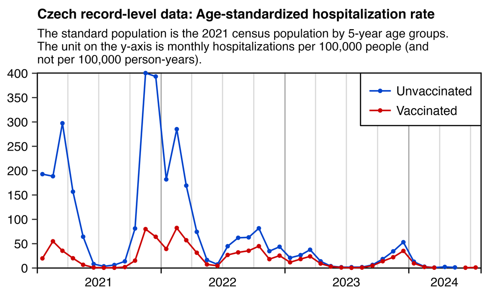
library(data.table);library(ggplot2)
# system("wget onemocneni-aktualne.mzcr.cz/api/v2/covid-19/ockovani-hospitalizace-tyden.csv sars2.net/f/cz{bucketsdaily.csv.gz,census2021pop.csv}")
t=fread("ockovani-hospitalizace-tyden.csv")
t=t[,.(date=tyden_od+3,hosp=c(hospitalizovani_celkem-hospitalizovani_bez_ockovani,hospitalizovani_bez_ockovani),status=rep(c("Vaccinated","Unvaccinated"),each=.N),age=as.integer(sub("[-+].*","",vekova_skupina)))]
t[age<25,age:=0]
a=t[,spline(date,hosp/7,xout=min(t$date):max(t$date)),.(age,status)][,.(hosp=sum(y)),.(age,status,month=substr(as.IDate(x),1,7))]
b=fread("czbucketsdaily.csv.gz")[,.(pop=sum(as.double(alive))),.(month=substr(date,1,7),status=ifelse(dose==0,"Unvaccinated","Vaccinated"),age=ifelse(age<25,0,pmin(age,90)%/%5*5))]
last=b[month=="2022-12",2:4]
b=rbind(b,cbind(last,month=rep(setdiff(a$month,b$month),each=nrow(last)))[,pop:=pop/31*days_in_month(paste0(month,"-1"))])
me=merge(a,b)
me=merge(me,me[,.(base=sum(hosp)/sum(pop)),age])[,base:=base*pop]
me=merge(me,fread("czcensus2021pop.csv")[,.(stdpop=sum(pop)),.(age=ifelse(age<25,0,pmin(age,95)%/%5*5))])
me[,month:=as.Date(paste0(month,"-1"))]
p=me[,.(hosp=sum(hosp/pop*stdpop/sum(stdpop)*365e5)),.(status,month)]
xstart=as.Date("2021-1-1");xend=as.Date("2024-8-1")
xlab=c(rbind("",2021:2024),"")
xbreak=sort(c(as.Date("2024-4-15"),xend,seq(xstart,as.Date("2024-1-1"),"6 month")))
cand=c(sapply(c(1,2,5),\(x)x*10^c(-10:10)))
ymax=max(p$hosp,na.rm=T)
ystep=cand[which.min(abs(cand-ymax/6))]
yend=ystep*ceiling(ymax/ystep)
yend=max(p$hosp)
ystart=0;ybreak=seq(ystart,yend,ystep)
color=hsv(c(22,0)/36,1,.8)
ggplot(p,aes(x=month+15,y=hosp))+
geom_vline(xintercept=seq(xstart,xend,"3 month"),color="gray85",linewidth=.3,lineend="square")+
geom_vline(xintercept=seq(xstart,xend,"year"),color="gray65",linewidth=.3,lineend="square")+
geom_vline(xintercept=c(xstart,xend),linewidth=.3,lineend="square")+
geom_hline(yintercept=c(ystart,0,yend),linewidth=.3,lineend="square")+
geom_line(aes(color=status),linewidth=.4)+
geom_point(aes(color=status),size=.5)+
labs(title="Age-standardized hospitalization rate per 100,000 person-years",subtitle=paste0("The standard population is the 2021 census population by 5-year age groups.")|>stringr::str_wrap(76),x=NULL,y=NULL)+
scale_x_date(limits=c(xstart,xend),breaks=xbreak,labels=xlab)+
scale_y_continuous(limits=c(ystart,yend),breaks=seq(ystart,yend,ystep),labels=\(x)ifelse(x>=1e3,paste0(x/1e3,"k"),x))+
scale_color_manual(values=color)+
coord_cartesian(clip="off",expand=F)+
theme(axis.text=element_text(size=7,color="black"),
axis.ticks=element_line(linewidth=.3),
axis.ticks.x=element_line(color=alpha("black",c(1,0))),
axis.ticks.length=unit(3,"pt"),
legend.direction="vertical",
legend.background=element_rect(fill="white",color="black",linewidth=.3),
legend.key.height=unit(11,"pt"),
legend.key.width=unit(15,"pt"),
legend.key=element_rect(fill="white"),
legend.margin=margin(-1,5,3,3.5),
legend.justification=c(1,1),
legend.position=c(1,1),
legend.spacing.x=unit(1.5,"pt"),
legend.text=element_text(size=7),
legend.title=element_blank(),
panel.grid.major=element_blank(),
panel.background=element_rect(fill="white"),
plot.margin=margin(3,5,4,4),
plot.subtitle=element_text(size=6.7,margin=margin(0,0,4,0)),
plot.title=element_text(size=7.5,face="bold",margin=margin(2,0,4,0)))
ggsave("0.png",width=3.8,height=2.1,dpi=300*4)
system("magick 0.png -resize 25% 1.png")
The file ockovani-hospitalizace-tyden.csv has hospitalizations by age group and vaccination status, but it's missing data for 2020. The file nakazeni-hospitalizace-testy.csv has hospitalizations by age group and it includes data for 2020, but it's missing the vaccination status, and for some reason it has about 27% more hospitalizations in 2021-2023 than the other file:
> ho1=fread("ockovani-hospitalizace-tyden.csv")
> ho2=fread("nakazeni-hospitalizace-testy.csv")
> d1=ho1[,.(tyden=sum(hospitalizovani_celkem)),.(year=substr(tyden,1,4))]
> d2=ho2[,.(testy=sum(nove_hospitalizace,na.rm=T)),.(year=substr(datum,1,4))]
> merge(d1,d2)[,ratio:=testy/tyden][]
year tyden testy ratio
1: 2020 5139 65095 12.666861
2: 2021 108847 133201 1.223745
3: 2022 55494 72212 1.301258
4: 2023 17133 24564 1.433724
5: 2024 1460 2266 1.552055
Therefore I wasn't able to merge the two files so I could've included hospitalizations from 2020 in the next two plots. And the next two plots are also likely to miss about 27% of hospitalizations in 2021-2023.
The hospitalization figures at OWID seem to roughly match the file nakazeni-hospitalizace-testy.csv:
$ wget covid.ourworldindata.org/data/owid-covid-data.csv
$ csvtk cut -f location,date,weekly_hosp_admissions owid-covid-data.csv|grep Czechia|grep 2021|awk -F, '{x+=$3}END{print x/7}'
134893
But anyway the following plot still shows that in ages 12-19 where there's the lowest percentage of vaccinated people, the total number of hospitalizations during the peak in February 2021 is higher than the number of hospitalizations at the start of 2021. But in ages 80+ where there's the highest percentage of vaccinated people, the total number of hospitalizations during the peak around February 2021 is much smaller than at the start of 2021.
And also if you add together the blue and red lines during the peak in March 2021, then the combined height of the lines is lower in old age groups that got vaccinated earlier.
However it's also weird that during the peak in February 2021, ages 12-19 have almost the same number of hospitalizations in vaccinated and unvaccinated people even though the percentage of vaccinated people is not that high.

The next plot shows the hospitalization rate per million people instead of the raw number of hospitalizations. Now vaccinated people in ages 12-19 have a big spike in the hospitalization rate around April 2021, but it's probably because vulnerable groups of people had been priorized to be vaccinated early. But otherwise unvaccinated people generally have a much higher hospitalization rate than vaccinated people up to around mid-2022, after which the ratio between vaccinated and unvaccinated people gradually gets smaller over time (which might be because unvaccinated people gradually acquire natural immunity over time):

library(data.table);library(ggplot2)
ma=\(x,b=1,f=b){x[]=rowMeans(embed(c(rep(NA,b),x,rep(NA,f)),f+b+1),na.rm=T);x}
agecut=\(x,y)cut(x,c(y,Inf),paste0(y,c(paste0("-",y[-1]-1),"+")),T,F)
ages=c(12,20,30,50,65,80)
t=fread("ockovani-hospitalizace-tyden.csv")
t=t[,.(date=tyden_od+3,hosp=c(hospitalizovani_celkem-hospitalizovani_bez_ockovani,hospitalizovani_bez_ockovani),status=rep(c("Vaccinated","Unvaccinated"),each=.N),age=agecut(as.integer(sub("[-+].*","",vekova_skupina)),ages))]
a=t[,spline(date,hosp/7,xout=min(t$date):max(t$date)),.(age,status)][,.(hosp=sum(y)),.(age,status,date=as.IDate(x))]
hosp=fread("nakazeni-hospitalizace-testy.csv")
hosp=hosp[vekova_kategorie!="-"&datum<"2021-1-1",.(hosp=sum(nove_hospitalizace,na.rm=T),status="Unvaccinated"),.(age=agecut(as.numeric(sub("[-+].*","",vekova_kategorie)),ages),date=datum)]
a=rbind(a[date>="2021-1-1"],hosp)
b=fread("czbucketsdaily.csv.gz")[,.(pop=sum(as.double(alive))),.(date,status=ifelse(dose==0,"Unvaccinated","Vaccinated"),age=agecut(age,ages))]
last=b[date=="2022-12-31",2:4]
b=rbind(b,cbind(last,date=rep(as.IDate(setdiff(a$date,b$date)),each=nrow(last))))
me=merge(a,b)
me=merge(me,me[,.(base=sum(hosp)/sum(pop)),age])[,base:=base*pop]
me=me[,.(hosp=sum(hosp),pop=sum(pop)),.(status,date,age)]
# first plot
p=me[,.(y=ma(hosp/pop,10),date),.(z=status,age)]
# # second plot
# p=me[,.(y=ifelse(pop<2e3,NA,ma(hosp/pop*1e6,10)),date),.(z=status,age)]
xstart=as.Date("2021-01-01");xend=as.Date("2024-1-1")
xbreak=seq(xstart,xend,"6 month");xlab=c(rbind("",2021:2023),"")
p=p[date>=xstart&date<=xend]
p=merge(p,p[,.(max=max(y)),age])
v=merge(b[status=="Vaccinated",.(age,date,vax=pop)],b[,.(pop=sum(pop)),.(date,age)])
p=rbind(p,v[,.(y=vax/pop,z="Percent vaccinated",age,date,max=1)])
p=p[!is.na(age)]
p$z=factor(p$z,c("Unvaccinated","Vaccinated","Percent vaccinated"))
color=c(hsv(c(7,0)/12,1,.8),"black")
ggplot(p,aes(x=date))+
facet_wrap(~age,ncol=1,strip.position="top")+
geom_vline(xintercept=seq(xstart,xend,"month"),linewidth=.2,color="gray92")+
geom_vline(xintercept=seq(xstart,xend,"3 month"),linewidth=.25,color="gray83")+
geom_vline(xintercept=seq(xstart,xend,"year"),linewidth=.25,color="gray66",lineend="square")+
geom_vline(xintercept=c(xstart,xend),linewidth=.25,lineend="square")+
geom_hline(yintercept=0:1,linewidth=.25,lineend="square")+
geom_line(aes(y=y/max,color=z),linewidth=.35)+
geom_label(data=p[!duplicated(age)],aes(label=sprintf("\n %s (%.0f) \n",age,max)),x=xend,y=1,lineheight=.5,hjust=1,vjust=1,size=2.3,fill=alpha("white",1),label.r=unit(0,"lines"),label.padding=unit(0,"lines"),label.size=.25)+
labs(x=NULL,y=NULL,title="Daily hospitalizations by vaccination status",subtitle="±10-day moving averages, not adjusted for population size. Displayed as percentage of the maximum value which is shown in parentheses."|>stringr::str_wrap(64))+
scale_x_date(limits=c(xstart,xend),breaks=xbreak,labels=xlab)+
scale_y_continuous(limits=0:1)+
scale_color_manual(values=color)+
coord_cartesian(clip="off",expand=F)+
guides(color=guide_legend(nrow=1,byrow=F))+
theme(axis.text=element_text(size=7,color="black"),
axis.text.y=element_blank(),
axis.ticks=element_blank(),
axis.ticks.x=element_line(color=alpha("black",c(1,0)),linewidth=.25),
axis.ticks.length=unit(0,"lines"),
axis.ticks.length.x=unit(.15,"lines"),
legend.background=element_blank(),
legend.box.spacing=unit(0,"pt"),
legend.direction="horizontal",
legend.justification=c(1,.5),
legend.key.height=unit(.7,"lines"),
legend.key.width=unit(1.1,"lines"),
legend.key=element_rect(fill=alpha("white",0)),
legend.margin=margin(.15,0,0,0,"lines"),
legend.position="bottom",
legend.spacing.x=unit(.1,"lines"),
legend.text=element_text(size=7,vjust=.5),
legend.title=element_blank(),
panel.spacing=unit(0,"lines"),
panel.background=element_rect(fill="white"),
panel.grid=element_blank(),
plot.margin=margin(.3,.3,.3,.3,"lines"),
plot.subtitle=element_text(size=6.8,margin=margin(0,0,.6,0,"lines")),
plot.title=element_text(size=7.2,face="bold",margin=margin(.1,0,.5,0,"lines")),
strip.background=element_blank(),
strip.text=element_blank())
ggsave("1.png",width=3,height=4.7,dpi=450)
The file ockovani-profese.csv has about 19 million rows with one row per vaccine dose. There's also a column for the name of the organization or individual who gave each vaccine dose.
Elderly people who live in a long-term care home have much higher age-normalized mortality rates than elderly people who don't live in a long-term care home, which is one of the confounding factors that is not account for by simple age-standardized mortality rates.
I wanted to check if Pfizer or Moderna had a higher percentage of vaccines given to elderly homes, so I searched for vaccinators whose name matched "Domov pro seniory", "Domov seniorů", or "Penzion pro seniory". There were only 7,708 matching rows, but it might be if people in elderly homes got vaccinated at a hospital, or if the name of the individual person who gave the vaccine was listed as the vaccinator and not the name of an elderly care facility:
> download.file("https://onemocneni-aktualne.mzcr.cz/api/v2/covid-19/ockovani-profese.csv","ockovani-profese.csv") # about 4 GiB
> pro=fread("ockovani-profese.csv")
> pro[,.N,zarizeni_nazev][grep("Domov pro seniory|Domov seniorů|Penzion pro seniory",zarizeni_nazev)][order(-N)]|>print(r=F)
zarizeni_nazev N
Domov pro seniory Zahradní Město - ordinace 1324
Domov pro seniory Háje, PL pro dospělé 1014
Domov pro seniory Chodov, praktický lékař 966
Domov pro seniory Malešice 959
Domov pro seniory Kobylisy, praktický lékař 536
Domov pro seniory Krč 512
Domov pro seniory Kamenec, Slezská Ostrava, p.o. 490
Domov seniorů Vysočany s.r.o. 435
Domov pro seniory Kladno 361
Domov seniorů U Přehrady, z. s. 322
Domov pro seniory Osoblaha, příspěvková organizace 185
Domov pro seniory Frýdek-Místek, p. o. 175
Domov pro seniory Holásecká, p. o. 103
Domov pro seniory Seniorcentrum Slavkov, p. o. 101
Domov pro seniory U Pramene Louny 86
Penzion pro seniory Frýdek-Místek, p. o. 59
Domov pro seniory Foltýnova, p. o. 50
Domov pro seniory Nopova,příspěvková organizace 18
Domov pro seniory Kosmonautů, p. o. 8
Domov seniorů Jankov, poskytovatel soc. služeb 4
But anyway, compared to a baseline of all vaccine types, the excess age-normalized proportion of rows where the vaccinator was one of the elderly homes listed above was about 50% for SPIKEVAX but about 8% for Comirnaty (which has now become another possible explanation for why Moderna gets a higher age-normalized mortality rate than Pfizer):
> d=pro[,.N,.(vaxtype=vakcina,vaccinator=zarizeni_nazev,age=vekova_skupina)]
> d=d[,.(N=sum(N),match=sum(N*grepl("Domov pro seniory|Domov seniorů|Penzion pro seniory",vaccinator))),.(vaxtype,age)]
> d=merge(d,d[,.(base=sum(match)/sum(N)),age])[,base:=base*N]
> d[,.(excess=round((sum(match)/sum(base)-1)*100),match=sum(match),N=sum(N)),vaxtype][,matchpct:=match/N*100][order(-N)][N>1e4]|>print(r=F)
vaxtype excess match N matchpct
Comirnaty 8 6071 15037534 0.0403723110
SPIKEVAX 50 1111 1634938 0.0679536472
VAXZEVRIA -83 104 887562 0.0117174913
Comirnaty Original/Omicron BA.4/BA.5 -38 158 436729 0.0361780418
COVID-19 Vaccine Janssen -98 2 415094 0.0004818186
Comirnaty Omicron XBB.1.5. -36 172 375130 0.0458507717
Comirnaty Original/Omicron BA.1 10 89 121312 0.0733645476
Comirnaty 5-11 -100 0 112874 0.0000000000
Nuvaxovid -100 0 11311 0.0000000000
The file ockovani-profese.csv includes a vaccinator ID and vaccinator name on all 19,047,050 rows. However it includes a different set of vaccinator IDs and vaccinator names than the file ockovaci-zarizeni.csv which has information about each vaccinator. And regardless of whether I tried to join the two files by the names or the IDs, about 15 million out of about 19 million rows in ockovani-profese.csv could not be joined:
| File | Unique IDs | Unique names |
|---|---|---|
ockovaci-zarizeni.csv
| 5571 | 5365 |
ockovani-profese.csv
| 5663 | 5439 |
| Shared by both files | 5391 | 5168 |
| Doses included by join | 3979039 | 4052183 |
The proportion of doses whose vaccinator ID was not missing from the file for vaccinator information was about 11% for Comirnaty, 52% for SPIKEVAX, and 81% for VAXZEVRIA (which again shows that the vaccine brands were not just distributed randomly like Kirsch has argued, since Pfizer vaccines had by far the highest percentage of doses whose vaccinator ID was missing from the ockovaci-zarizeni.csv file):
> download.file("https://onemocneni-aktualne.mzcr.cz/api/v2/covid-19/ockovani-zarizeni.csv","ockovani-zarizeni.csv")
> zar=fread("ockovaci-zarizeni.csv")
> d=pro[,.(joined=sum(zarizeni_kod%in%zar$zarizeni_kod),doses=.N),.(vaxtype=vakcina)]
> d[,joinedpct:=round((joined/doses)*100)][order(-joined)][joined>1e4]|>print(r=F)
vaxtype joined doses joinedpct
Comirnaty 1606601 15037534 11 # Pfizer (by far lowest joined percentage)
SPIKEVAX 850742 1634938 52 # Moderna
VAXZEVRIA 714750 887562 81 # AstraZeneca (highest joined percentage)
Comirnaty Omicron XBB.1.5. 278685 375130 74
COVID-19 Vaccine Janssen 220765 415094 53
Comirnaty Original/Omicron BA.4/BA.5 186579 436729 43
Comirnaty Original/Omicron BA.1 72163 121312 59
Comirnaty 5-11 40573 112874 36
In the file for vaccinator information, I believe the field prakticky_lekar indicates if the vaccinator was a doctor who is a practicioner, but it might not necessarily mean a general practicioner. For the approximately 4 million out of 19 million rows in ockovani-profese.csv where the vaccinator ID was not missing from the file for vaccinator information, the excess age-normalized percentage of doses where the prakticky_lekar field was true was about -7% for Comirnaty but 7% for SPIKEVAX:
> vaccinators=zar[,.(vaccinator=zarizeni_kod,practioner=!is.na(zar$prakticky_lekar))]
> d=merge(pro[,.N,.(vaxtype=vakcina,vaccinator=zarizeni_kod,age=vekova_skupina)],vaccinators)
> d=d[,.(N=sum(N),match=sum(practioner*N)),.(vaxtype,age)]
> d=merge(d,d[,.(base=sum(match)/sum(N)),age])[,base:=base*N]
> d[,.(excesspct=round((sum(match)/sum(base)-1)*100),joined=sum(N)),vaxtype][order(-joined)][joined>=1e4]|>print(r=F)
vaxtype excesspct joined
Comirnaty -7 1606601
SPIKEVAX 7 850742
VAXZEVRIA 3 714750
Comirnaty Omicron XBB.1.5. 4 278685
COVID-19 Vaccine Janssen 5 220765
Comirnaty Original/Omicron BA.4/BA.5 3 186579
Comirnaty Original/Omicron BA.1 3 72163
Comirnaty 5-11 0 40573
When I looked at only first doses instead of all doses, Comirnaty now had so many doses missing that there were three other vaccine types that had a higher number of doses that could be joined by the vaccinator ID. But now the excess age-normalized percentage of doses where the prakticky_lekar field was true was about -30% for Comirnaty but about 11% for SPIKEVAX:
> d=merge(pro[poradi_davky==1,.N,.(vaxtype=vakcina,vaccinator=zarizeni_kod,age=vekova_skupina)],vaccinators)
> d=d[,.(N=sum(N),match=sum(practioner*N)),.(vaxtype,age)]
> d=merge(d,d[,.(base=sum(match)/sum(N)),age])[,base:=base*N]
> d[,.(excesspct=round((sum(match)/sum(base)-1)*100),joined=sum(N)),vaxtype][order(-joined)][joined>=1e4]|>print(r=F)
vaxtype excesspct joined
VAXZEVRIA 4 359921
SPIKEVAX 11 272755
COVID-19 Vaccine Janssen 7 218950
Comirnaty -30 209720
Comirnaty 5-11 0 21275
About 7 million rows whose vaccinator ID was missing from the ockovaci-zarizeni.csv file had the vaccinator ID included in the file prehled-ockovacich-mist.csv (which means overview of vaccination sites):
> pro=fread("ockovani-profese.csv")
> mist=fread("prehled-ockovacich-mist.csv")
> pro[zarizeni_kod%in%mist$nrpzs_kod,.N]
[1] 6863264
However the prehled-ockovacich-mist.csv file only includes the following columns but not the column which indicates if the vaccinator was a doctor practicioner:
| Column | Translation | Sample value |
|---|---|---|
| ockovaci_misto_id | vaccination site ID | 1185422c-106a-4606-8828-2e53d31860e0 |
| ockovaci_misto_nazev | vaccination site name | (Bez registrace) FYZIOklinika, Praha 11 Chodov, Machkova 1642/2 |
| okres_nuts_kod | district NUTS code | CZ0100 |
| operacni_status | operational status | 1 |
| ockovaci_misto_adresa | vaccination site address | Machkova 1642/2, Praha 11, Chodov |
| latitude | latitude | 50.03269 |
| longitude | longitude | 14.51327 |
| ockovaci_misto_typ | vaccination site type | WALKIN |
| nrpzs_kod | NRPZS code | 24222101000 |
| minimalni_kapacita | minimum capacity | 250 |
| bezbarierovy_pristup | barrier-free access | 1 |
In an earlier section I combined Excel files published by the Czech Statistical Office in order to generate a CSV file that shows yearly deaths grouped by ICD code for the underlying cause of death and age: czech2.html#Deaths_by_ICD_code_region_age_group_and_year, https://csu.gov.cz/produkty/zemreli-podle-seznamu-pricin-smrti-pohlavi-a-veku-v-cr-krajich-a-okresech-fgjmtyk2qr.
The yearly number of deaths in the Excel files is otherwise identical to the record-level data except the record-level data is missing a single death in 2021:
> rec=fread("CR_records.csv")
> reclev=rec[,.(reclev=.N),.(year=year(DatumUmrti))]
> eurostat=fread("http://sars2.net/f/czpopdead.csv")[,.(eurostat=sum(dead)),year]
> icd=fread("http://sars2.net/f/czicd.csv.gz")[,.(icd=sum(dead)),year]
> merge(icd,merge(reclev,eurostat))
year icd reclev eurostat
1: 2020 129289 129289 129289
2: 2021 139891 139890 139891
3: 2022 120219 120219 120219
But anyway, I now used the data for deaths by underlying cause of death to make the plot below, where the left side shows ASMR grouped by the underlying cause of death, and the right side shows the excess ASMR percent relative to a 2013-2019 linear trend. I used the 2021 census population by 5-year age groups as the standard population.
There's almost no excess deaths in 2021 and 2022 if the deaths where the underlying cause of death was COVID are excluded. For example in 2021 there was about 25% total excess ASMR but it fell to only about 3% if deaths with the underlying cause of COVID were excluded. So if vaccines were killing a huge number of people like Kirsch seems to suggest, then did the people all die of COVID?
Turbo cancer is nowhere to be seen either, because the excess percentage of deaths with an underlying cause of neoplasms is about -3% in 2021 and -1% in 2022. (But Ethical Skeptic would probably argue it's because I committed the crime of torfuscation, which means that I didn't account for mortality displacement by adjusting my baseline for the pull forward effect.)
In 2020-2022 there is however a clear increase in deaths under the ICD chapter I which consists of diseases of the circulatory system, even though the excess mortality for chapter I was the highest in 2020 which is difficult to blame on the vaccines.
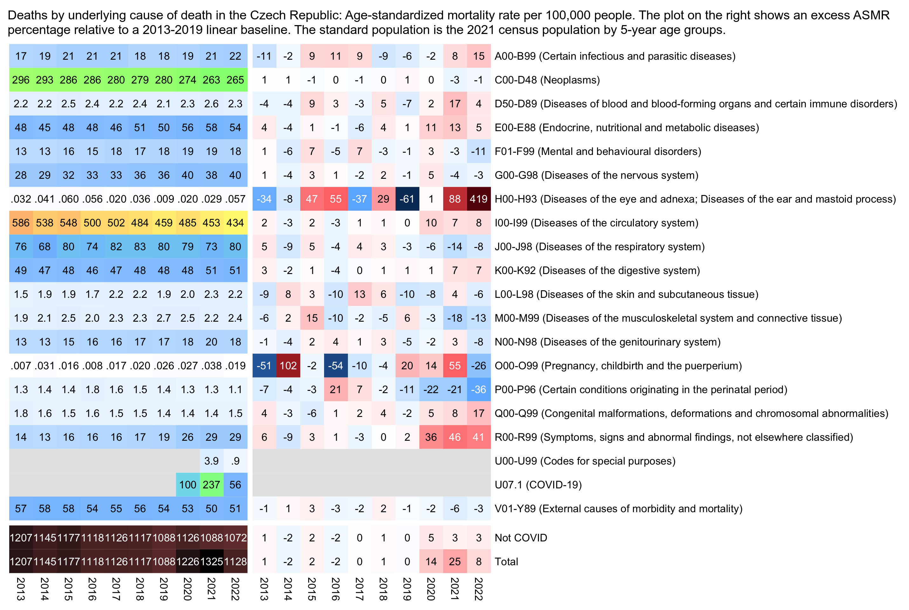
library(data.table)
cul=\(x,y)y[cut(x,c(y,Inf),y,T,F)]
t=fread("http://sars2.net/f/czicd.csv.gz")
icd=read.csv(sep=":",text="start:end:name
A00:B99:Certain infectious and parasitic diseases
C00:D48:Neoplasms
D50:D89:Diseases of blood and blood-forming organs and certain immune disorders
E00:E88:Endocrine, nutritional and metabolic diseases
F01:F99:Mental and behavioural disorders
G00:G98:Diseases of the nervous system
H00:H93:Diseases of the eye and adnexa; Diseases of the ear and mastoid process
I00:I99:Diseases of the circulatory system
J00:J98:Diseases of the respiratory system
K00:K92:Diseases of the digestive system
L00:L98:Diseases of the skin and subcutaneous tissue
M00:M99:Diseases of the musculoskeletal system and connective tissue
N00:N98:Diseases of the genitourinary system
O00:O99:Pregnancy, childbirth and the puerperium
P00:P96:Certain conditions originating in the perinatal period
Q00:Q99:Congenital malformations, deformations and chromosomal abnormalities
R00:R99:Symptoms, signs and abnormal findings, not elsewhere classified
U00:U99:Codes for special purposes
V01:Y89:External causes of morbidity and mortality")
u=unique(t$icd)
w=apply(outer(u,icd$start,">=")&outer(u,icd$end,"<="),1,which)
icdname=paste0(icd$start,"-",icd$end," (",icd$name,")")[w][match(t$icd,u)]
icdname[t$icd=="U07"]="U07.1 (COVID-19)"
t$cause=icdname
d=t[,.(dead=sum(dead)),.(cause=factor(cause),age,year)]
d=rbind(d,d[!grep("COVID",cause),.(dead=sum(dead),cause="Not COVID"),.(year,age)],d[,.(dead=sum(dead),cause="Total"),.(year,age)])
pop=fread("http://sars2.net/f/czpopdead.csv")[,.(pop=sum(pop)),.(age=cul(age,unique(t$age)),year)]
std=fread("http://sars2.net/f/czcensus2021pop.csv")[,.(std=sum(pop)),.(age=cul(age,unique(t$age)))][,std:=std/sum(std)]
d=merge(std,merge(d,pop))
a=d[,.(asmr=sum(dead/pop*std*1e5)),.(year,cause)]
a=merge(a,a[year<=2019,.(year=2013:2022,trend=predict(lm(asmr~year),.(year=2013:2022))),cause],all=T)
m1=a[,tapply(asmr,.(cause,year),c)]
m2=a[,tapply(trend,.(cause,year),c)]
m=(m1-m2)/ifelse(m1>m2,m2,m1)*100
disp=round((m1/m2-1)*100)
hide=apply(is.na(m1),1,any);m[hide]=disp[hide]=NA
maxcolor=100;m[is.infinite(m)]=maxcolor;exp=.8
pheatmap::pheatmap(abs(m)^exp*sign(m),filename="i1.png",display_numbers=disp,
gaps_row=nrow(m)-2,
cluster_rows=F,cluster_cols=F,legend=F,cellwidth=18,cellheight=18,fontsize=9,fontsize_number=8,
border_color=NA,na_col="gray90",
number_color=ifelse(abs(m)^exp>maxcolor^exp*.4,"white","black"),
breaks=seq(-maxcolor^exp,maxcolor^exp,,256),
colorRampPalette(hsv(rep(c(7/12,0),5:4),c(.9,.75,.6,.3,0,.3,.6,.75,.9),c(.4,.65,1,1,1,1,1,.65,.4)))(256))
pal2=colorRampPalette(hsv(c(21,21,21,16,11,6,3,0,0,0)/36,c(0,.25,rep(.5,8)),c(rep(1,8),.5,0)))(256)
m=m1
dig=floor(apply(log10(m),1,max,na.rm=T))
disp=m;disp[]=ifelse(dig[row(m)]<=1,sub("^0","",sprintf("%.*f",1-dig,m)),round(m))
maxcolor=max(m,na.rm=T);exp=.7
pheatmap::pheatmap(m^exp,filename="i2.png",display_numbers=disp,
gaps_row=nrow(m)-2,
cluster_rows=F,cluster_cols=F,legend=F,cellwidth=18,cellheight=18,fontsize=9,fontsize_number=8,
border_color=NA,na_col="gray90",
number_color=ifelse(abs(m)^exp>.8*maxcolor^exp,"white","black"),
breaks=seq(0,maxcolor^exp,,256),pal2)
system("magick \\( i2.png -extent 780x \\) \\( i1.png -chop 14x \\) +append 1.png")
The plot below shows raw deaths and not ASMR. Now the only year when circulatory deaths are clearly elevated above the baseline is 2020, but in 2021 and 2022 circulatory deaths are close to the baseline (even though the method I used to calculate excess deaths in my previous plot was probably more accurate because it was based on ASMR and not raw deaths, and in my previous plot I also got fairly high excess mortality for circulatory deaths in 2021 and 2022):
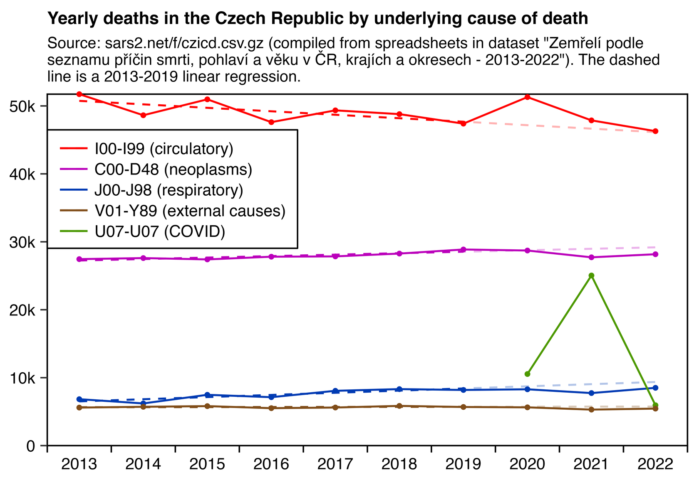
library(data.table)
cul=\(x,y)y[cut(x,c(y,Inf),y,T,F)]
t=fread("http://sars2.net/f/czicd.csv.gz")
codes=read.csv(sep=":",text="start:end:name
C00:D48:Neoplasms
I00:I99:Circulatory
J00:J98:Respiratory
V01:Y89:External causes
U07:U07:COVID-19")
u=unique(t$icd)
w=apply(outer(u,codes$start,">=")&outer(u,codes$end,"<="),1,which)
w[lengths(w)==0]=NA;w=unlist(w)
icdname=paste0(codes$start,"-",codes$end," (",codes$name,")")
p=t[,.(y=sum(dead)),.(z=factor(icdname[w[match(t$icd,u)]],icdname),x=year)][!is.na(z)]
xstart=min(p$x);xend=max(p$x)
xbreak=seq(xstart-.5,xend+.5,.5);xlab=c(rbind("",xstart:xend),"")
ystart=0;yend=max(p$y);ystep=1e4;ybreak=seq(ystart,yend,ystep)
color=c("#bb00bb","red",hsv(22/36,1,.7),hsv(4/36,.5,.5),hsv(9/36,1,.6))
lm=p[x<2020,.(x=2013:2022,y=predict(lm(y~x),.(x=2013:2022))),z]
ggplot(p,aes(x,y))+
geom_vline(xintercept=c(xstart-.5,xend+.5),linewidth=.3,lineend="square")+
geom_hline(yintercept=c(ystart,yend),linewidth=.3,lineend="square")+
geom_line(aes(color=z),linewidth=.4)+
geom_line(data=lm,aes(color=z),linetype=2,linewidth=.4,alpha=.3)+
geom_line(data=lm[x<2020],aes(color=z),linetype=2,linewidth=.4)+
geom_point(data=p[!grep("Linear",z)],aes(color=z),size=.5,show.legend=F)+
labs(title="Yearly deaths in the Czech Republic by underlying cause of death",subtitle=paste0("Source: sars2.net/f/czicd.csv.gz (compiled from spreadsheets in dataset \"Zemřelí podle seznamu příčin smrti, pohlaví a věku v ČR, krajích a okresech - 2013-2022\"). The dashed line is a 2013-2019 linear regression."|>stringr::str_wrap(88)),x=NULL,y=NULL)+
scale_x_continuous(limits=c(xstart-.5,xend+.5),breaks=xbreak,labels=xlab)+
scale_y_continuous(limits=c(ystart,yend),breaks=ybreak,labels=\(x)ifelse(x>=1e3,paste0(x/1e3,"k"),x))+
scale_color_manual(values=color)+
coord_cartesian(clip="off",expand=F)+
theme(axis.text=element_text(size=7,color="black"),
axis.ticks=element_line(linewidth=.3),
axis.ticks.x=element_line(color=alpha("black",c(1,0))),
axis.ticks.length=unit(3,"pt"),
legend.direction="vertical",
legend.background=element_rect(fill=alpha("white",.8),color="black",linewidth=.3),
legend.key.height=unit(9,"pt"),
legend.key.width=unit(15,"pt"),
legend.key=element_rect(fill="white"),
legend.margin=margin(-2,5,3,4),
legend.justification=c(0,.5),
legend.position=c(0,.73),
legend.spacing.x=unit(1.5,"pt"),
legend.text=element_text(size=7),
legend.title=element_blank(),
panel.grid.major=element_blank(),
panel.background=element_rect(fill="white"),
plot.margin=margin(3,5,4,4),
plot.subtitle=element_text(size=6.7,margin=margin(0,0,4,0)),
plot.title=element_text(size=7.5,face="bold",margin=margin(2,0,4,0)))
ggsave("0.png",width=4.2,height=2.9,dpi=400*4)
system("magick 0.png -resize 25% 1.png")
Ethical Skeptic and Clare Craig have made plots which have showed that in US counties that later had a lower percentage of vaccinated people, there already tended to be a higher COVID mortality rate in 2020 before vaccination started. So I wanted to check if the same was true of the Czech Republic.
The Czech Republic consists of 14 regions (kraj). They can be divided into 77 LAU1 regions, which consist of 76 districts along with Prague. The LAU1 regions are the same as the NUTS4 regions. In the file umrti.csv COVID deaths are classified under codes for the 77 NUTS4/LAU1 regions. But in the files ockovani-orp.csv and ockovani-profese.csv the vaccinations classified under 208 ORP codes instead ("obce s rozšířenou působností", "municipality with extended jurisdiction"). I didn't find a way to map the ORP codes to NUTS4 codes. This file has information about the ORP codes, but it doesn't seem to include NUTS4 or LAU1 codes: https://data.gov.cz/dataset?iri=https%3A%2F%2Fdata.gov.cz%2Fzdroj%2Fdatov%C3%A9-sady%2F00025712%2F52c6e525fda1b5f842e169420a4d8d29.
So in the plot below I had to settle with plotting the kraj but not more fine-grained regions. When I compared the percentage of vaccinated people in 2024 against the yearly COVID ASMR, I got a negative correlation of -0.35 in 2020, -0.30 in 2021, and -0.23 in 2022, but in 2023 I got a positive correlation of 0.34. But the percentage of vaccinated people only ranges from about 60% to 65% across the regions, so the difference is so small that it probably won't have much effect on mortality from COVID (regardless of whether the effect would be due to vaccine efficacy or due to confounders):
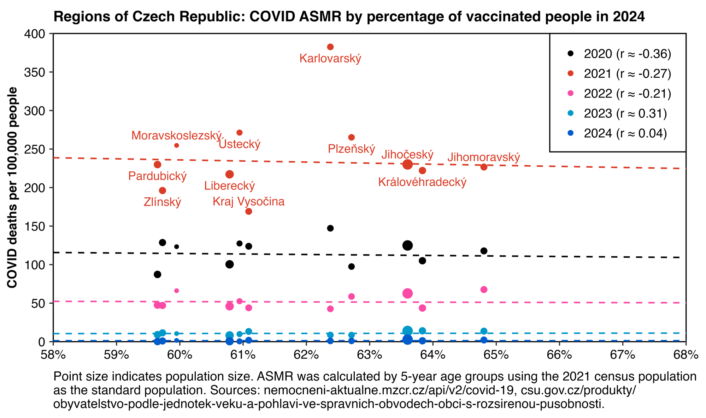
library(data.table);library(ggplot2)
# dlf=\(x,y,...){if(missing(y))y=sub(".*/","",x);for(i in 1:length(x))download.file(x[i],y[i],quiet=T,...)}
# dlf("https://onemocneni-aktualne.mzcr.cz/api/v2/covid-19/ockovani.csv")
# dlf("https://onemocneni-aktualne.mzcr.cz/api/v2/covid-19/umrti.csv")
# dlf("https://csu.gov.cz/docs/107508/1cab7ab3-4d2e-4d0e-c2a8-425e3442218c/130181-23data2022.csv")
# dlf("http://sars2.net/f/cznuts.csv")
# dlf("http://sars2.net/f/czcensus2021pop.csv")
vax=fread("ockovani.csv")
um=fread("umrti.csv")
pop=fread("130181-23data2022.csv")
nuts=read.csv("cznuts.csv")
covid=um[,.(dead=.N),.(year=year(datum),age=pmin(vek,95)%/%5*5,nuts=kraj_nuts_kod)]
pop2=pop[uzemi_typ=="kraj"&!is.na(vek_txt)&pohlavi_txt!=""]
pop2=pop2[,.(pop=sum(hodnota)),.(age=pmin(95,vek_txt)%/%5*5,name=uzemi_txt)]
pop2=merge(pop2,nuts)
covid=unique(rbind(covid,cbind(expand.grid(lapply(covid[,-4],unique)),dead=0)),by=1:3)[!is.na(age)]
covid=merge(covid,pop2)
std=fread("czcensus2021pop.csv")[,sum(pop),pmin(age,95)%/%5][,V1/sum(V1)]
p=covid[,.(pop=sum(pop),asmr=sum(dead/pop*std[age/5+1]*1e5)),.(name,year,nuts)]
p=merge(p,vax[,.(vax=sum(prvnich_davek)),.(nuts=kraj_nuts_kod)])
p[,vaxpct:=vax/pop*100]
p$size=pmax(.2,log(p$pop,300)-1.2)^4+.2
xstart=58;xend=68;xstep=1;ystart=0;yend=400;ystep=50
xbreak=seq(xstart,xend,xstep)
ybreak=seq(ystart,yend,ystep)
cor=sapply(split(p,p$year),\(x)cor(x$asmr,x$vaxpct))
p$year=`levels<-`(factor(p$year),sprintf("%s (r ≈ %.2f)",2020:2024,cor))
smooth=do.call(rbind,lapply(split(p,p$year),\(x)data.frame(year=x$year[1],x=0:1000/10,y=predict(lm(asmr~vaxpct,x),list(vaxpct=seq(0,100,.1))))))
color=c("black",hcl(c(0,330,200,240)+15,c(130,110,120,100),c(50,60,50,40)))
d=p[,.(x=vaxpct,y=asmr,year,name)][order(x)]
ggplot(d,aes(x,y))+
geom_vline(xintercept=c(xstart,xend),linewidth=.3,lineend="square")+
geom_hline(yintercept=c(ystart,yend),linewidth=.3,lineend="square")+
# ggrepel::geom_text_repel(data=d[year==2021],aes(label=sub(" kraj$","",name),color=year),size=2.3,point.padding=2,show.legend=F,max.overlaps=Inf,segment.size=.3,min.segment.length=.1,direction="y",force=10,force_pull=2,box.padding=.1)+
geom_text(data=d[grep(2021,year)],aes(label=sub(" kraj$","",name),color=year),size=2.3,vjust=c(-.7,1.8)[c(2,1,2,2,1,2,2,1,2,2,1,2,1,2)],show.legend=F)+
geom_point(aes(color=year),stroke=0,size=p$size,alpha=1)+
geom_line(data=smooth,aes(group=year),color=color[smooth$year],linetype=2,linewidth=.4,show.legend=F)+
labs(x=NULL,y="COVID deaths per 100,000 people",title="Regions of Czech Republic: COVID ASMR by percentage of vaccinated people in 2024",caption="Point size indicates population size. ASMR was calculated by 5-year age groups using the 2021 census population
as the standard population. Sources: nemocneni-aktualne.mzcr.cz/api/v2/covid-19, csu.gov.cz/produkty/
obyvatelstvo-podle-jednotek-veku-a-pohlavi-ve-spravnich-obvodech-obci-s-rozsirenou-pusobnosti.")+
scale_x_continuous(limits=c(xstart,xend),breaks=xbreak,labels=\(x)paste0(x,"%"))+
scale_y_continuous(limits=c(ystart,yend),breaks=ybreak)+
scale_color_manual(values=color)+
coord_cartesian(clip="off",expand=F)+
theme(axis.text=element_text(size=7,color="black"),
axis.ticks=element_line(linewidth=.3),
axis.ticks.length=unit(.15,"lines"),
axis.title=element_text(face="bold",size=7),
legend.direction="vertical",
legend.background=element_rect(fill="white",color="black",linewidth=.3),
legend.key.height=unit(11,"pt"),
legend.key.width=unit(15,"pt"),
legend.key=element_rect(fill="white"),
legend.margin=margin(0,8,5,4),
legend.justification=c(1,1),
legend.position=c(1,1),
legend.spacing.x=unit(0,"pt"),
legend.text=element_text(size=7),
legend.title=element_blank(),
panel.grid=element_blank(),
panel.background=element_rect(fill="white"),
plot.margin=margin(4,11,4,4),
plot.caption=element_text(size=7,hjust=0),
plot.subtitle=element_text(size=7,hjust=0),
plot.title=element_text(size=8,face="bold",margin=margin(2,,5)))
ggsave("0.png",width=5.4,height=3.2,dpi=370*4)
system("magick 0.png -resize 25% 1.png")
I excluded Prague from the plot above, because it had about 97% vaccinated people even though in all other regions the percentage was below 65%. In many age groups Prague had more vaccinated people than the total population size, so maybe it includes people who lived outside of Prague but who only got vaccinated in Prague (or maybe the population estimates I used only included residents but the vaccination data also included non-residents):
> vax=fread("https://onemocneni-aktualne.mzcr.cz/api/v2/covid-19/ockovani.csv")
> pop=fread("https://csu.gov.cz/docs/107508/1cab7ab3-4d2e-4d0e-c2a8-425e3442218c/130181-23data2022.csv")
> v=vax[vekova_skupina!="nezařazeno"&kraj_nazev=="Hlavní město Praha",.(vax=sum(prvnich_davek)),.(age=as.numeric(sub("[-+].*","",vekova_skupina)))]
> cul=\(x,y)y[cut(x,c(y,Inf),,T,F)] # cut left
> p=pop[uzemi_txt=="Hlavní město Praha"&pohlavi_txt==""&!is.na(vek_txt),.(pop=sum(hodnota)),.(age=cul(vek_txt,sort(v$age)))]
> me=merge(v,p)
> me=rbind(me,me[,.(vax=sum(vax),pop=sum(pop),age="Total")])
> print(me[,pct:=round(vax/pop*100)][],r=F)
age vax pop pct
0 66 72645 0
5 17732 102655 17
12 46141 57207 81
16 25165 25668 98
18 110186 90035 122
25 106575 79198 135
30 122900 103610 119
35 120213 109717 110
40 132965 115795 115
45 126063 118052 107
50 89726 85964 104
55 79771 78193 102
60 63867 63691 100
65 70931 69461 102
70 70938 67388 105
75 60680 60170 101
80 68902 57877 119
Total 1312821 1357326 97
On Twitter canceledmouse pointed out to me that I shouldn't be using the term "age-standardized mortality rate" if I'm not calculating ASMR using a standardized standard population like the WHO standard population. [https://x.com/canceledmouse/status/1816244644981924101, https://x.com/henjin256/status/1816446274087817629] He later wrote this Substack article about the same issue: https://openvaet.substack.com/p/dunning-kruger-illustrated-asmr-explained. I posted this comment to the Substack article:
You wrote that on my website I "explained that the following was an ASMR without any reference population being loaded". However in the code you showed, I used the resident population estimates from the 2021 Czech census as my reference population.
I think the word "standard" in a "standard population" means that it's a signpost against which the age-standardized mortality rate is calculated, and not necessarily that it's some established standard that has been defined formally.
In English the word "standard" has multiple meanings, but in other languages the word for a standard population does not have a connotation of a standard in the sense of an ISO standard. For example the Finnish term for ASMR is "ikävakioitu kuolleisuusaste" which literally means something like "age-defaulted mortality degree", and the Finnish term for a standard population is "vakioväestö" which literally means "default population".
And anyway, if I calculate ASMR using a non-standard standard population, what am I supposed to call it if I'm not allowed to call it ASMR?
I asked ChatGPT: "what is a term for a weighted average of age-specific mortality rates where the weight is the number of people that are included in each age group during a reference year like 2020". But it answered: "The term for a weighted average of age-specific mortality rates where the weights are the number of people in each age group during a reference year is known as the Age-Standardized Mortality Rate (ASMR). Age-standardized mortality rates are used to compare mortality rates between populations that have different age structures. This method adjusts for age by applying the age-specific mortality rates of a study population to a standard age distribution. The weights, in this context, are the population numbers in each age group from a reference year (e.g., 2020)."
If you calculate ASMR for the Czech Republic at Mortality Watch, it uses the 2020 Czech population as the standard population by default (which is not any standardized standard): https://www.mortality.watch/explorer/?c=CZE&v=2.
You wrote that you "succeeded in having him admitting his mistake" because I said that I sometimes used a non-standardized standard population to calculate ASMR. But it wasn't any admission of a mistake, because I don't think the standard population for ASMR has to be any standardized standard population like ESP2013.
You wrote: "To calculate the date of birth, he picks a random birth date corresponding to the birth year, for each subject… which is a great way to ensure his code will be impossible to reproduce, and that the population & resulting summaries will change on each iteration of his script." However I'm setting a seed in my code before I generate the random birthdays: http://sars2.net/czech.html#Bucket_analysis.
You wrote: "From a second file provided by Eurostats, he picks his reference population - being the 2021 CZ data." In the plot I used the resident population estimates in the 2021 Czech census as my standard population. But I didn't get them from Eurostat but from the website of the Czech Statistical Office: https://vdb.czso.cz/vdbvo2/faces/en/index.jsf?page=vystup-objekt&z=T&f=TABULKA&skupId=4449&katalog=33517&pvo=SLD21022-VSE&pvo=SLD21022-VSE&str=v335.
You wrote: "He then employs various hacks & smoothing to make the gum stick". But what hacks did I employ? I just calculated ASMR the regular way, but my plot showed daily data so of course it made sense to display it as a moving average.
On Twitter you wrote: "I hate ASMR and never uses it, my point is that this calculation isn't an ASMR, and will never be an ASMR. Simply not the same math applied, making the chart titles misleading." But when I asked you to explain how my math was different from regular ASMR, you didn't explain it. And I didn't find any place where you explained it in this Substack post either. You just said that I applied "hacks" to calculate ASMR but you didn't explain what the hacks were. But if I'm using the regular formula to calculate ASMR but I simply use a non-standard standard population instead of a standardized standard population, the math should still be the same.
I'm calculating ASMR as a weighted average of age-specific mortality rates, where the weight is the number of people from each age group that is included in the standard population. For example here my standard population was the estimated Czech resident population on January 1st 2020 by single year of age (where ages 100 and above were aggregated together):
> library(data.table) > t=fread(<span class=quote>"http://sars2.net/f/czpopdead.csv"</span>) > t=merge(t,t[year==2020,.(std=pop/sum(pop),age)]) > t[,.(asmr=round(sum(dead/pop*std)*1e5)),year][year>=2015]|>print(r=F) year asmr 2015 1164 2016 1105 2017 1114 2018 1105 2019 1076 2020 1209 2021 1305 2022 1113
You pointed out that the record-level data might be missing vaccination records for people who died in case the database record for the vaccination could not be joined with the database record for the death.
That might be the case, but the yearly number of deaths and yearly number of vaccinations in the record-level data are both identical or nearly identical to other sources.
The Czech Statistical Office has published Excel files which show the yearly number of deaths by ICD code, age group, and region: https://csu.gov.cz/produkty/zemreli-podle-seznamu-pricin-smrti-pohlavi-a-veku-v-cr-krajich-a-okresech-fgjmtyk2qr. I combined the Excel files into a single CSV file here: http://sars2.net/czech2.html#Deaths_by_ICD_code_region_age_group_and_year.
The yearly number of deaths in the Excel files was identical to yearly number of deaths at Eurostat in 2020-2022. And both were otherwise identical to the record-level data except the record-level data was only missing a single death in 2021:
> rec=fread(<span class=quote>"curl -Ls github.com/skirsch/Czech/blob/main/data/CR_records.csv.xz|xz -dc"</span>) > reclev=rec[,.(reclev=.N),.(year=year(DatumUmrti))] > eurostat=fread(<span class=quote>"http://sars2.net/f/czpopdead.csv"</span>)[,.(eurostat=sum(dead)),year] > icd=fread(<span class=quote>"http://sars2.net/f/czicd.csv.gz"</span>)[,.(icd=sum(dead)),year] > merge(icd,merge(reclev,eurostat))|>print(r=F) year icd reclev eurostat 2020 129289 129289 129289 2021 139891 139890 139891 2022 120219 120219 120219This calculation also shows that in CSV files published by the Czech Ministry of Health, the number of vaccine doses given by up to the end of 2023 is nearly identical to the record-level data: http://sars2.net/czech2.html#Number_of_vaccine_doses_by_type_in_record_level_data_compared_to_MoH_data.
This PDF describes the national health information system used in the Czech Republic (NZIS) along with the "infectious disease information system" (ISIN) which contains information about COVID cases and vaccines: https://vladci.cz/archive/covid/106/UZIS_2022-02_Struktura_NZIS_106.pdf.
You wrote that I aggregated together ages 0-4 even though most deaths in ages 0-4 are in age 0. But that was actually a good point to criticize, and I have switched to treating 0 and 1-4 as separate age groups in some of my newer scripts for the Czech data.
You wrote that Eurostat's population estimates for January 1st 2023 were "census data". But I think the population estimates also incorporate other data which was not part of the publication for the 2021 census, so it's not necessarily accurate to call them "census data".
The dataset has resident population estimates on December 31st 2022 by age group, region, and sex: https://data.gov.cz/datová-sada?iri=https%3A%2F%2Fdata.gov.cz%2Fzdroj%2Fdatové-sady%2F00025593%2Fa129a5408e8e5fd99497e9a22c39775e. I now found that the total population size in the dataset is identical to Eurostat's population estimate for January 1st 2023:
> system(<span class=quote>"wget csu.gov.cz/docs/107508/a53bbc83-5e04-5a74-36f9-549a090a806e/130142-24data051724.zip ;unzip 130142-24data051724.zip"</span>) > pop=fread(<span class=quote>"130181-23data2022.csv"</span>) > pop[uzemi_typ=="stát"&is.na(vek_txt)&pohlavi_txt=="",hodnota] # region type is whole country, age is empty (all ages), and sex is empty (both males and females) [1] 10827529 > fread(<span class=quote>"http://sars2.net/f/czpopdead.csv"</span>)[year==2023,sum(pop)] [1] 10827529
You posted a plot which showed that in ages 10-24 unvaccinated people had higher ASMR than vaccinated people. But it might be because of the healthy vaccinee effect, because if for example you look at single years of age in the age range of 10-24, people who died from a suicide or drug overdose were probably less likely to be vaccinated than other people with the same age (but if you compare ages 10-24 as a whole then it's of course biased because people at the upper end of the age group are more likely to die of a suicide but they're also more likely to be vaccinated).
It might be a coincidence, but your plot actually showed that unvaccinated ASMR had a peak around February 2022, which was around the same time when hospitalizations for COVID peaked in ages 0-11, 12-17, and 18-27: http://sars2.net/czech2.html#Hospitalizations_peaked_in_2022_in_the_youngest_age_groups. In ages 80+ my moving average for daily hospitalizations peaked in November 2020, but it peaked in March 2021 in ages 60-79, 40-59, and 20-39, and it only peaked around February 2022 in ages 0-19. So in younger age groups that got vaccinated later, the hospitalizations also peaked later.
However if you look at only unvaccinated people, the hospitalization rate remained high in February 2022 even in the oldest age groups: http://sars2.net/czech3.html#Hospitalizations_by_age_group_and_vaccination_status.
There's not enough COVID deaths in ages 10-24 to reliably use COVID deaths as the outcome for estimating vaccine efficacy, but there's a lot more hospitalizations than deaths. In the file
nakazeni-hospitalizace-testy.csvthere's 4,686 hospitalizations in ages 0-11, 1,074 in 12-15, 666 in 16-17, and 2,899 in 18-24.
And I also posted this comment:
Jikkyleaks has blocked me so I don't know if he saw my reply on Twitter. He said that I keep quiet about the gp120 sequences, but I wrote about them here: http://sars2.net/pradhan.html#Arkmedics_BLAST_searches_for_Pradhan_et_al_s_inserts. And I still haven't finished writing my article about Modernagate, but I posted a short version of it here: http://kirschsubstack.com/p/how-can-millions-of-people-all-exhibiting/comment/59033015.
When Fredy13_Backup showed you Bobby_Network's old research on Reiner Füllmich, you were making it seem like Bobby couldn't be trusted because he once had something negative to say about Jikkyleaks. But I pointed out that the Modernagate story doesn't hold water, so Bobby_Network and McKernan were correct in criticizing it.
Bobby posted this reply to a thread where McKernan showed why Modernagate was a bogus story: "Kevin's steps & arguments are clearly highly consistent, incorporating this for my future efforts too. I'll also re-BLAST his steps, also known as Science101. I'm open for real counters, Yuri-Ebright-Basket-Case-Frames resemble rather Trust the Plan-LARPs." (https://x.com/Bobby_Network/status/1496386212399095811) Then Jikky replied: "You believe that the presence of the 19nt sequence in esoteric bacteria explains the presence in furin cleavage site in #SARSCOV2?" And then Bobby replied: "I'm not talking about bacteria to be the source template, neither is actual GoF discussed atm. At the heart of it all: Will your core paradigm & dogma #Modernagate result into free of doubt success at any court, while the 19nt seq can be found in Nature too? Clearly no, too weak." And he continued in another reply: "No court in the world will say Yes & Amen here, when in fact the precise 19nt is not patented and also occures in nature, sole focus on reasoning only this is too naive, we need a variety of attack vectors (ranked) to be fully convincing, and they might yield the desired success."
Then in another thread McKernan posted a screenshot that showed that Jikky had blocked him and wrote "Sorry to see it devolve into this." And Bobby posted a screenshot of McKernan's tweet and wrote: "Will Jikky resort to blocking #metoo, instead of discussing this through? The digital artist is looking for more watertight attack vectors VS @moderna_tx which could hold at any court through qualitative & quantitative persuasion. Am I now licking ass for my upcoming Moderna job?" (https://x.com/Bobby_Network/status/1496449231481184257) After that Jikky also blocked Bobby.
BTW yesterday when I was searching for Twitter accounts that had posted about Limeng Yan in Japanese, I found this bot that promotes Qanon and that posts in a mixture of Japanese, Arabic, and English: https://x.com/glorious_harmo (https://x.com/search?q=lang%3Aja+limeng+yan&f=live). I wonder if it's an acquaintance of Arkmedic, because its pinned tweet features the same image that Arkmedic uses as his profile picture at Gab and his banner image at Twitter, which features the text "WHERE WE GO ONE WE GO ALL" and the hashtag "#QAnon". It's now been about three years since even Alex Jones, Mike Flynn, and Robert David Steele all started to say that Q was a psyop. So why does Arkmedic still use that image as his profile picture? Does he still trust the plan?
{kind=link}